Constraints, Rolling Motion, Multibody Systems and Torque-Free Motion
Constraints on a rigid body, rolling with and without slip, indeterminate reactions, multibody systems and exploded views, the general recipe, and torque-free motion with Poinsot's construction.
Sources: Notes.pdf, chapters 13, 14 and 15; no lecture deck covers this topic.
Central idea of the topic
A rigid body seldom moves freely: joints, collars and contacts with other bodies restrict its linear and angular velocities, and the reactions that enforce those restrictions enter the equations as new unknowns. This topic translates each mechanical connection into conditions on the velocity field, studies rolling with and without slip (zero relative velocity of the contact point), shows when reactions cannot be found with a rigid model, writes the equations of a system of bodies part by part and as a whole with exploded views, collects the Newtonian procedure of the course for systems of particles and rigid bodies, and closes with the torque-free rigid body: Euler's equations with no torque, the axisymmetric body with its steady precession, and Poinsot's geometric construction with the inertia ellipsoid, the invariable plane, polhodes, herpolhodes and the instability of rotation about the intermediate axis.
1. Constraints on a rigid body
Like a point particle, a rigid body may have its motion partially restricted by kinematic constraints, for instance contact with neighbouring bodies. The physical mechanism that keeps a constraint satisfied is a set of reaction forces and torques. Constraints reduce the number of independent ways the system can move, that is, the dimension of the tangent subspace; when every constraint is integrable this dimension equals the number of configuration degrees of freedom. In exchange, the components of the reaction forces and couples become new unknowns of the problem (Notes.pdf, Ch. 13).
The goal is always the same: translate each connection into mathematical conditions on the linear and angular displacements and velocities of the bodies, and decide which components of the reaction force and torque exist.
Symbol
Meaning
SI unit
$B_1$, $B_2$
two rigid bodies in contact or connected
-
$C$
connection point (centre of a joint, contact point)
-
$C(B_1)$, $C(B_2)$
body points of $B_1$ and of $B_2$ that coincide with $C$ at the instant considered (Notes.pdf, Sec. 9.1)
-
$\mathbf v_0^{C(B_1)}$, $\mathbf a_0^{C(B_1)}$
velocity and acceleration of $C(B_1)$ relative to $S_0$
angular velocity and acceleration of $B_1$ relative to $S_0$
rad/s, rad/s$^2$
$\mathbf R$
resultant reaction force at the connection, components $R_x$, $R_y$, $R_z$
N
$\mathbf M_C$
resultant reaction torque about $C$, components $M_{Cx}$, $M_{Cy}$, $M_{Cz}$
N m
1.1 Planar motion
Planar motion means that every point of the body moves in one of a family of parallel planes. This is only possible when the angular velocity is always perpendicular to those planes.
Planar motion leaves three degrees of freedomLaw: velocity field of the rigid body; scalar triple product with two parallel vectorsSource: Notes.pdf, Sec. 13.1; Notes.pdf, Eq. 9.3
Let $\mathbf k$ be the unit normal to the planes of motion and $A$, $P$ any two body points.
$$\begin{aligned}
\mathbf v_0^P &= \mathbf v_0^A + \boldsymbol\omega_{B0}\times\overrightarrow{AP} \quad &\text{(velocity field of the rigid body, Eq. 9.3)} \\
\mathbf v_0^P\cdot\mathbf k &= \mathbf v_0^A\cdot\mathbf k + \left(\boldsymbol\omega_{B0}\times\overrightarrow{AP}\right)\cdot\mathbf k \quad &\text{(dot product with the normal k)} \\
\boldsymbol\omega_{B0} &= \omega\,\mathbf k \quad &\text{(angular velocity normal to the planes)} \\
\left(\omega\,\mathbf k\times\overrightarrow{AP}\right)\cdot\mathbf k &= \omega\,\overrightarrow{AP}\cdot\left(\mathbf k\times\mathbf k\right) = 0 \quad &\text{(cyclic triple product; k cross k is zero)} \\
\mathbf v_0^P\cdot\mathbf k &= \mathbf v_0^A\cdot\mathbf k = 0 \quad &\text{(every point stays in its own plane)} \\
n_{\mathrm{dof}} &= 6 - 3 = 3 \quad &\text{(three conditions: two angular components and one normal velocity)}
\end{aligned}$$
$$\boxed{\boldsymbol\omega_{B0}\parallel\mathbf k,\qquad \mathbf v_0^A\cdot\mathbf k = 0,\qquad n_{\mathrm{dof}} = 3}$$
Units: the velocity condition is in $[\mathrm{L\,T^{-1}}]$; the count is a pure number.
Meaning: two translations in the plane and one rotation about its normal remain; the other three motions are forbidden.
1.2 Inextensible string
An inextensible string keeps the distance between its two end points constant while it stays straight. With ideal frictionless pulleys the constraint still says that the total length is constant, whatever the shape. The constraint links the displacements of the attached points along the string, and it is enforced by the tension, which is always tangent to the string.
Straight inextensible string between two pointsLaw: constant distance; time derivative of a scalar productSource: Notes.pdf, Sec. 13.1
Let $P_1$ and $P_2$ be the attached points, $\ell$ the constant length and $\mathbf e$ the unit vector from $P_1$ to $P_2$.
$$\begin{aligned}
\overrightarrow{P_1P_2}\cdot\overrightarrow{P_1P_2} &= \ell^2 \quad &\text{(constraint: the distance is constant)} \\
\frac{d}{dt}\left(\overrightarrow{P_1P_2}\cdot\overrightarrow{P_1P_2}\right) &= 2\,\overrightarrow{P_1P_2}\cdot\frac{d\overrightarrow{P_1P_2}}{dt}\bigg|_0 \quad &\text{(product rule for the dot product)} \\
\frac{d\overrightarrow{P_1P_2}}{dt}\bigg|_0 &= \mathbf v_0^{P_2} - \mathbf v_0^{P_1} \quad &\text{(derivative of a difference of position vectors)} \\
2\,\ell\,\mathbf e\cdot\left(\mathbf v_0^{P_2} - \mathbf v_0^{P_1}\right) &= \frac{d\ell^2}{dt} = 0 \quad &\text{(the right-hand side is constant)}
\end{aligned}$$
$$\boxed{\left(\mathbf v_0^{P_2} - \mathbf v_0^{P_1}\right)\cdot\mathbf e = 0,\qquad \text{tension along }\mathbf e}$$
Units: $[\mathrm{L}]\,[\mathrm{L\,T^{-1}}] = [\mathrm{L^2\,T^{-1}}]$ in the third row, equal to the derivative of $\ell^2$.
Meaning: only the velocity components along the string are tied together; the transverse motion of each end is free.
1.3 Ball-and-socket joint and pin connection
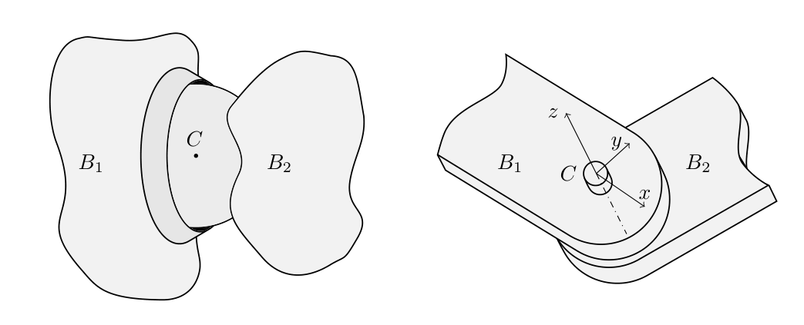
Figure 1. Ball-and-socket joint (left): $C$ is a point of both bodies, no orientation is constrained. Pin connection (right): the axis $Cz$ belongs to both bodies and only the rotation about it is free. Copied from Notes.pdf, Fig. 13.1, p. 103.
A ball-and-socket joint lets each body rotate freely about the centre $C$ of the ball, so it imposes no condition on the orientation of either body. The centre $C$ is, however, a body point common to both bodies, which must move in unison there. A pin connection makes the pin axis $Cz$ a common axis of both bodies and, in addition, allows only the relative rotation about that axis.
Ball-and-socket joint: three constraints, three reaction unknownsLaw: common body point; differentiation of an identity; third law of NewtonSource: Notes.pdf, Sec. 13.1
$$\begin{aligned}
\mathbf r_0^{C(B_1)}(t) &= \mathbf r_0^{C(B_2)}(t) \quad &\text{(C is a body point of both bodies at all times)} \\
\mathbf v_0^{C(B_1)} &= \mathbf v_0^{C(B_2)} \quad &\text{(time derivative in S0 of an identity)} \\
\mathbf a_0^{C(B_1)} &= \mathbf a_0^{C(B_2)} \quad &\text{(second time derivative in S0)} \\
n_{\mathrm{constraints}} &= 3 \quad &\text{(one vector equality, three scalar components)} \\
\text{reaction on }B_1 &= R_x\,\mathbf i + R_y\,\mathbf j + R_z\,\mathbf k,\quad \text{reaction on }B_2 = -\left(R_x\,\mathbf i + R_y\,\mathbf j + R_z\,\mathbf k\right) \quad &\text{(third law of Newton)} \\
\mathbf M_C &= \mathbf 0 \quad &\text{(orientation not constrained, so no reaction torque)}
\end{aligned}$$
Units: velocities in $[\mathrm{L\,T^{-1}}]$, accelerations in $[\mathrm{L\,T^{-2}}]$, reactions in $[\mathrm{M\,L\,T^{-2}}]$.
Meaning: three scalar constraints are matched by exactly three reaction components.
Pin connection: five constraints, five reaction unknownsLaw: common axis of both bodies; relative angular velocity along the pinSource: Notes.pdf, Sec. 13.1
Let $\mathbf k$ be the unit vector of the pin axis $Cz$ and $\mathbf i$, $\mathbf j$ two unit vectors perpendicular to it.
$$\begin{aligned}
\mathbf v_0^{P(B_1)} &= \mathbf v_0^{P(B_2)},\quad \mathbf a_0^{P(B_1)} = \mathbf a_0^{P(B_2)}\quad \forall P\in Cz \quad &\text{(the axis belongs to both bodies)} \\
\boldsymbol\omega_{B_2 0} - \boldsymbol\omega_{B_1 0} &\parallel \mathbf k \quad &\text{(only relative rotation about the pin is allowed)} \\
\left(\boldsymbol\omega_{B_1 0} - \boldsymbol\omega_{B_2 0}\right)\cdot\mathbf i &= 0,\quad \left(\boldsymbol\omega_{B_1 0} - \boldsymbol\omega_{B_2 0}\right)\cdot\mathbf j = 0 \quad &\text{(components normal to the axis vanish)} \\
\left(\boldsymbol\alpha_{B_1 0} - \boldsymbol\alpha_{B_2 0}\right)\cdot\mathbf i &= 0,\quad \left(\boldsymbol\alpha_{B_1 0} - \boldsymbol\alpha_{B_2 0}\right)\cdot\mathbf j = 0 \quad &\text{(same conditions for the angular accelerations)} \\
n_{\mathrm{constraints}} &= 3 + 2 = 5 \quad &\text{(velocity of C plus two angular components)} \\
\text{unknowns} &: R_x,\,R_y,\,R_z,\,M_{Cx},\,M_{Cy};\quad M_{Cz} = 0 \quad &\text{(the reaction torque prevents only the two forbidden rotations)}
\end{aligned}$$
$$\boxed{n_{\mathrm{constraints}} = 5:\quad \mathbf R = R_x\,\mathbf i + R_y\,\mathbf j + R_z\,\mathbf k,\quad \mathbf M_C = M_{Cx}\,\mathbf i + M_{Cy}\,\mathbf j}$$
Units: forces in $[\mathrm{M\,L\,T^{-2}}]$, torques in $[\mathrm{M\,L^2\,T^{-2}}]$.
Meaning: the reactions distributed along the pin reduce, at $C$, to a force and a torque with no component about the pin axis; on each body they are equal and opposite.
1.4 Collars and sliders
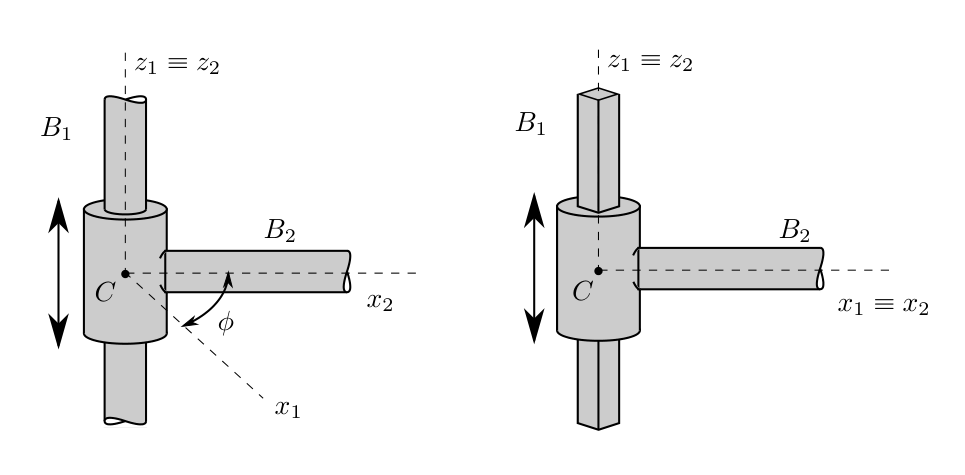
Figure 2. Left: collar on a cylindrical bar, free to slide along and to turn about $z_1\equiv z_2$ by an angle $\phi$ between $x_1$ and $x_2$. Right: collar on a prismatic bar, free only to slide ($x_1\equiv x_2$). Copied from Notes.pdf, Fig. 13.2, p. 103.
A collar slides over a bar. Let $S_1$ be attached to the bar with $z_1$ along its axis, and $S_2$ attached to the body $B_2$ that carries the collar, with $Oz_2$ coinciding with $Oz_1$. On a cylindrical bar the collar may slide along and rotate about $z_1$; on a prismatic bar it may only slide.
Collar on a cylindrical bar and on a prismatic barLaw: matching of the forbidden velocity and angular velocity componentsSource: Notes.pdf, Sec. 13.1
$$\begin{aligned}
\left(\mathbf v_0^{C(B_2)} - \mathbf v_0^{C(B_1)}\right)\cdot\mathbf i_1 &= 0,\quad \left(\mathbf v_0^{C(B_2)} - \mathbf v_0^{C(B_1)}\right)\cdot\mathbf j_1 = 0 \quad &\text{(no displacement across the bar)} \\
\left(\boldsymbol\omega_{B_2 0} - \boldsymbol\omega_{B_1 0}\right)\cdot\mathbf i_1 &= 0,\quad \left(\boldsymbol\omega_{B_2 0} - \boldsymbol\omega_{B_1 0}\right)\cdot\mathbf j_1 = 0 \quad &\text{(no rotation about x1 or y1 relative to the bar)} \\
n_{\mathrm{constraints}}^{\mathrm{cyl}} &= 4 \quad &\text{(cylindrical bar: sliding along and turning about z1 allowed)} \\
\left(\boldsymbol\omega_{B_2 0} - \boldsymbol\omega_{B_1 0}\right)\cdot\mathbf k_1 &= 0 \quad &\text{(prismatic bar: rotation about z1 also forbidden)} \\
n_{\mathrm{constraints}}^{\mathrm{pri}} &= 4 + 1 = 5 \quad &\text{(only sliding along z1 remains)}
\end{aligned}$$
Units: forces in $[\mathrm{M\,L\,T^{-2}}]$, torques in $[\mathrm{M\,L^2\,T^{-2}}]$.
Meaning: each forbidden velocity component is enforced by a reaction force along it, and each forbidden rotation by a reaction torque about that axis.
Combinations of connections are common, for instance a collar plus a pin: adding the pin frees one of the rotational constraints.
1.5 The general rule
Constraints, reaction unknowns and remaining freedom of a connectionLaw: one reaction component per scalar constraintSource: Notes.pdf, Sec. 13.1
$$\begin{aligned}
n_{\mathrm{reactions}} &= n_{\mathrm{constraints}} \quad &\text{(each scalar constraint is enforced by one force or torque component)} \\
n_{\mathrm{reactions}} + n_{\mathrm{free}} &= 6 \quad &\text{(constrained plus free relative motions of one body)} \\
\text{ball-and-socket} &: 3 + 3 = 6,\quad \text{pin}: 5 + 1 = 6 \quad &\text{(Sec. 1.3)} \\
\text{cylindrical collar} &: 4 + 2 = 6,\quad \text{prismatic collar}: 5 + 1 = 6 \quad &\text{(Sec. 1.4)}
\end{aligned}$$
$$\boxed{n_{\mathrm{reactions}} = n_{\mathrm{constraints}} \le 6\ \text{per connection and body}}$$
Units: pure counts.
Meaning: first infer the restrictions on the linear and angular velocities, then count the non-zero reaction components; together with the remaining degrees of freedom there are at most six unknowns per connection and body.
Connection
Constraints
Reaction unknowns
Relative motions left
Ball-and-socket
$\mathbf v_0^{C(B_1)} = \mathbf v_0^{C(B_2)}$
$R_x, R_y, R_z$
3 rotations
Pin about $Cz$
the above plus two angular components
$R_x, R_y, R_z, M_{Cx}, M_{Cy}$
rotation about $Cz$
Collar, cylindrical bar
2 transverse velocities, 2 angular components
$R_x, R_y, M_{Cx}, M_{Cy}$
slide along and turn about $z_1$
Collar, prismatic bar
the above plus the angular component about $z_1$
$R_x, R_y, M_{Cx}, M_{Cy}, M_{Cz}$
slide along $z_1$
2. Rolling motion
When two bodies $B_1$ and $B_2$ touch at a single point $C$ they can roll on each other: a sphere on a plane, two cylinders. There is always a contact normal $\mathbf e_n$ and a tangent plane spanned by $\mathbf e_{t1}$, $\mathbf e_{t2}$. The contact point and the basis $B_C$ formed by these three vectors change as the bodies move; the frame $S_C$ has origin $C$ and basis $B_C$ (Notes.pdf, Sec. 13.2).
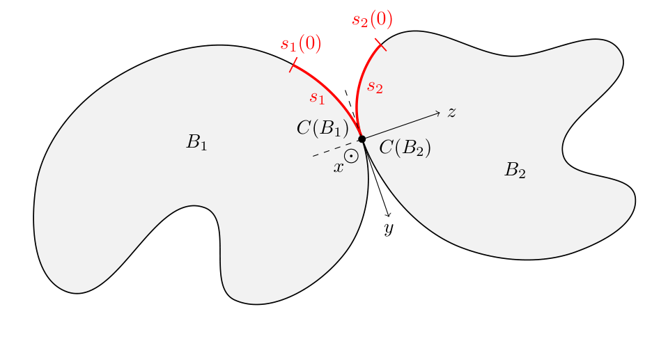
Figure 3. Rolling contact. Two bodies in contact at the single point $C$, with the contact axes $x$ (out of the paper $\odot$), $y$ and $z$; rolling without slipping makes the arcs $s_1-s_1(0)$ and $s_2-s_2(0)$ equal. Copied from Notes.pdf, Fig. 13.3, p. 104.
2.1 No penetration and no slip
No-penetration constraintLaw: the bodies cannot overlap, so the normal velocities at contact are equalSource: Notes.pdf, Eq. 13.1
$$\begin{aligned}
\mathbf v_0^{C(B_1)}\cdot\mathbf e_n - \mathbf v_0^{C(B_2)}\cdot\mathbf e_n &\gt 0 \ \text{or} \lt 0 \quad &\text{(either sign would open a gap or make the bodies overlap)} \\
\mathbf v_0^{C(B_1)}\cdot\mathbf e_n &= \mathbf v_0^{C(B_2)}\cdot\mathbf e_n \quad &\text{(contact is kept)} \\
\left(\mathbf v_0^{C(B_1)} - \mathbf v_0^{C(B_2)}\right)\cdot\mathbf e_n &= 0 \quad &\text{(distributivity of the dot product)}
\end{aligned}$$
Meaning: one scalar constraint; the relative velocity of the contact points lies in the tangent plane (sliding is still allowed).
A case of special interest is rolling without slipping, as a rough rubber wheel on a road. The bodies may not slide on each other, so the tangential components of the velocities of the contact points must also be equal.
Rolling without slippingLaw: no-penetration plus no sliding in the tangent planeSource: Notes.pdf, Eq. 13.2; Notes.pdf, Eq. 13.3
$$\begin{aligned}
\left(\mathbf v_0^{C(B_1)} - \mathbf v_0^{C(B_2)}\right)\cdot\mathbf e_{t1} &= 0,\quad \left(\mathbf v_0^{C(B_1)} - \mathbf v_0^{C(B_2)}\right)\cdot\mathbf e_{t2} = 0 \quad &\text{(no sliding along the tangent plane)} \\
\left(\mathbf v_0^{C(B_1)} - \mathbf v_0^{C(B_2)}\right)\cdot\mathbf e_{n} &= 0 \quad &\text{(Eq. 13.1)} \\
\mathbf v_0^{C(B_1)} - \mathbf v_0^{C(B_2)} &= \mathbf 0 \quad &\text{(a vector with zero components in the basis $B_C$ is zero)} \\
\dot s_1 &= \dot s_2 \quad &\text{(the contact point advances at the same rate along both perimeters)} \\
\int_0^t \dot s_1\,dt' &= \int_0^t \dot s_2\,dt' \quad &\text{(integration of equal rates from 0 to t)} \\
\left[s_1\right]_0^t &= \left[s_2\right]_0^t \quad &\text{(antiderivative of each rate is its arc length)} \\
s_1(t) - s_1(0) &= s_2(t) - s_2(0) \quad &\text{(Barrow's rule)}
\end{aligned}$$
Units: velocities in $[\mathrm{L\,T^{-1}}]$; arc lengths in $[\mathrm{L}]$.
Meaning: the contact point of $B_1$ has zero velocity relative to $B_2$ and vice versa; the arcs swept by the contact point on each perimeter are equal.
2.2 The disk rolling on a floor
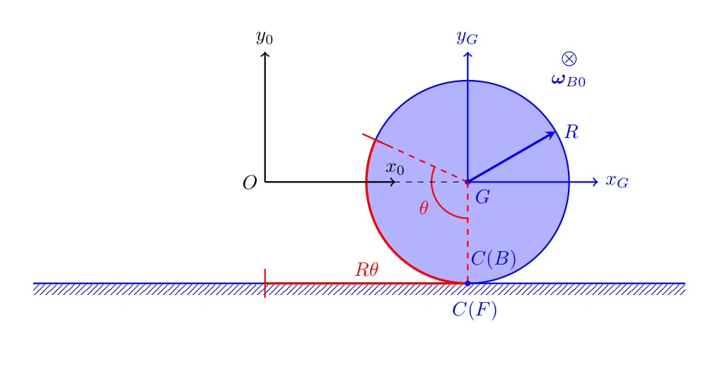
Figure 4. Disk rolling without slip. $S_0$ is fixed to the floor; the disk turns clockwise by $\theta$, so $\boldsymbol\omega_{B0}$ points into the paper $\otimes$, and the arc $R\theta$ on the floor equals the arc on the disk. Copied from Notes.pdf, Fig. 13.4, p. 105.
Consider a homogeneous disk $B$ of radius $R$ rolling on the floor $F$ along a line. The frame $S_0$ with origin $O$ and basis $B_0$ is fixed to the floor; $S_G$ has origin at the centre of mass $G$ and the same basis $B_0$. With $\mathbf i_0$ to the right and $\mathbf j_0$ upward, the right-hand rule puts $\mathbf k_0$ out of the paper (⊙). The angle $\theta$ is the rotation of the disk since the start, measured clockwise in the figure; a clockwise rotation has angular velocity into the paper (⊗), so the angular velocity of the disk points along minus $\mathbf k_0$ when the rate of $\theta$ is positive.
Symbol
Meaning
SI unit
$R$
radius of the disk
m
$x_0^G$, $y_0^G$
coordinates of $G$ in $S_0$
m
$\theta$
angle turned by the disk, clockwise
rad
$\boldsymbol\omega_{B0}$
angular velocity of the disk, along minus $\mathbf k_0$ times the rate of $\theta$
rad/s
$C(B)$, $C(F)$
body points of the disk and of the floor at the contact
-
If the disk rolls and slips (a smooth disk on ice), the only constraint is no penetration.
Rolling with slip: no penetration keeps G at a fixed heightLaw: velocity field of the disk; Eq. 13.1 with the floor at restSource: Notes.pdf, Eq. 13.1; Notes.pdf, Eq. 9.3
Units: $[\mathrm{L\,T^{-1}}]$ for the velocities, $[\mathrm{L}]$ for the height.
Meaning: while the disk does not take off, its centre stays at the height of $O$; the horizontal displacement and the rotation are independent.
Rolling without slip: the holonomic constraint of the diskLaw: zero velocity of the contact point; velocity field of the diskSource: Notes.pdf, Eq. 13.4; Notes.pdf, Eq. 13.6
$$\begin{aligned}
\mathbf v_0^{C(B)} &= \mathbf v_0^{C(F)} = \mathbf 0 \quad &\text{(Eq. 13.2 with the floor at rest)} \\
\mathbf v_0^G &= \mathbf v_0^{C(B)} + \boldsymbol\omega_{B0}\times\overrightarrow{CG} \quad &\text{(velocity field from the contact point, Eq. 13.6)} \\
&= \mathbf 0 + \left(-\dot\theta\,\mathbf k_0\right)\times\left(R\,\mathbf j_0\right) \quad &\text{(CG points straight up, length R)} \\
&= -R\,\dot\theta\,\left(\mathbf k_0\times\mathbf j_0\right) \quad &\text{(scalars taken out of the cross product)} \\
&= R\,\dot\theta\,\mathbf i_0 \quad &\text{(k0 cross j0 equals minus i0)} \\
\dot x_0^G &= R\,\dot\theta \quad &\text{(i0 component; v0G equals the rate of x0G times i0)} \\
\int_0^t \dot x_0^G\,dt' &= \int_0^t R\,\dot\theta\,dt' \quad &\text{(integration from the start of the motion)} \\
x_0^G(t) - x_0^G(0) &= R\left[\theta(t) - \theta(0)\right] \quad &\text{(Barrow's rule; R constant)} \\
x_0^G(t) &= R\,\theta(t) \quad &\text{(origin chosen with x0G and theta both zero at the start)}
\end{aligned}$$
$$\boxed{x_0^G = R\,\theta}$$
Units: $[\mathrm{L}] = [\mathrm{L}]\,[1]$; the angle is dimensionless.
Meaning: the arc $s$ travelled by the contact point along the floor equals the arc of perimeter swept by the angle; the tangent subspace has dimension one, and it is often simpler to keep both coordinates and eliminate one at the end with this relation.
Figure 5. Velocity field of the rolling disk: $\mathbf v_0^{C(B)}=\mathbf 0$, $\overrightarrow{CG}=R\,\mathbf j_0$ and $\boldsymbol\omega_{B0}=-\dot\theta\,\mathbf k_0$ (into the paper $\otimes$) give $\mathbf v_0^G=R\dot\theta\,\mathbf i_0$..
2.3 Three-dimensional rolling and non-integrable constraints
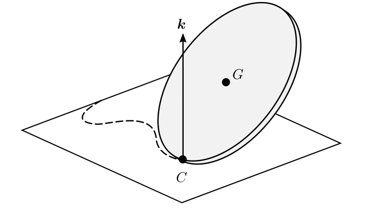
Figure 6. A disk $B$ rolling without slip and wobbling on the floor $F$: the trace of the contact point $C$ is a two-dimensional curve, so two coordinates are needed to place $C$ in the plane. Copied from Notes.pdf, Fig. 13.5, p. 105.
The arc-length formulation becomes hard or impossible when the motion is complex. For a disk that rolls without slipping while wobbling (Notes.pdf, Fig. 13.5), the trace of $C$ on the floor is a two-dimensional curve and two coordinates are needed to place $C$ in the plane. The no-penetration and no-slip constraints must then be imposed through the velocities.
Rolling without slip on a fixed floorLaw: Eq. 13.2 with the floor at rest; instantaneous axis of rotationSource: Notes.pdf, Eq. 13.5; Notes.pdf, Eq. 9.8
$$\begin{aligned}
\mathbf v_0^{C(B)} &= \mathbf v_0^{C(F)} \quad &\text{(Eq. 13.2 applied to the disk B and the floor F)} \\
\mathbf v_0^{C(F)} &= \mathbf 0 \quad &\text{(every point of the floor is at rest in S0)} \\
\mathbf v_0^{C(B)} &= \mathbf 0 \quad &\text{(substitution)}
\end{aligned}$$
Meaning: $C(B)$ satisfies the condition of Eq. 9.8, so it lies on the instantaneous axis of rotation of the disk. The geometric point $C$ is not a body point of either body, hence the notation $C(B)$ and $C(F)$. On a moving conveyor belt the velocity of $C(B)$ would not vanish: it would equal that of $C(F)$.
Except in trivial cases such as the planar disk, Eq. 13.5 cannot be integrated into a relation among the coordinates like Eq. 13.4. Rolling without slipping is then a relation among the derivatives of the coordinates, not among the coordinates: a constraint that cannot be written in the closed form of a function of the coordinates equal to zero is a non-integrable constraint. One or more redundant coordinates must then be kept; the constraint eliminates only their derivatives.
Extension: coordinate count of the wobbling disk
The count below is not worked out in the notes, which only state that two coordinates are needed for the contact point and that the constraint is non-integrable. It uses the standard 3-1-3 Euler angles of Notes.pdf, Sec. 9.2, with the disk axis along the body vector of the spin axis, and the right triangle of the figure that follows.
Figure 7. Height of the centre of a rolling disk: $z_0^G=R\sin\theta$ from the shaded right triangle. The angle at $C$ between the disk plane and the floor equals the nutation $\theta$ between the disk axis and the vertical ($\mathbf i_1=\mathbf i_2$ out of the paper $\odot$)..
Extension: holonomic and non-holonomic parts of rolling on a floorLaw: no penetration as a coordinate relation; no slip as a velocity relationSource: Notes.pdf, Sec. 13.2; Notes.pdf, Sec. 9.2
Right triangle in the vertical plane through the disk axis: hypotenuse $GC$ of length $R$ in the plane of the disk, vertical leg from $C$ up to the height of $G$ (opposite to the angle at $C$), horizontal leg along the floor (adjacent). The angle at $C$ between the disk plane and the floor equals the nutation $\theta$ between the disk axis and the vertical, because both are complements of the same angle.
$$\begin{aligned}
n_{\mathrm{coord}} &= 3 + 3 = 6 \quad &\text{(position of G and three Euler angles)} \\
z_0^G &= R\sin\theta \quad &\text{(opposite leg of the triangle: hypotenuse R times sine of the angle at C)} \\
n_{\mathrm{coord}} - 1 &= 5 \quad &\text{(no penetration is holonomic and removes z0G)} \\
\mathbf v_0^{C(B)}\cdot\mathbf e_{t1} &= 0,\quad \mathbf v_0^{C(B)}\cdot\mathbf e_{t2} = 0 \quad &\text{(the two tangential no-slip conditions, Eq. 13.5)} \\
n_{\mathrm{tangent}} &= 5 - 2 = 3 \quad &\text{(dimension of the tangent subspace)}
\end{aligned}$$
Units: height in $[\mathrm{L}] = [\mathrm{L}]\,[1]$; the rest are counts.
Meaning: five coordinates (three angles and the two floor coordinates of $G$) must be kept although only three independent velocities exist; this is the count of Notes.pdf, Sec. 14.1, item 4: effective degrees of freedom plus non-integrable constraints.
2.4 Velocity of the centre of mass from the contact point
The equations of dynamics are written in terms of the velocity and acceleration of $G$ and the angular velocity and acceleration of the body, so these are wanted as functions of independent coordinates. Once the velocity of $C(B)$ is known, the velocity field links them.
Velocity of G from the contact pointLaw: velocity field of the rigid body between two body pointsSource: Notes.pdf, Eq. 13.6; Notes.pdf, Eq. 9.3
$$\begin{aligned}
\mathbf v_0^A &= \mathbf v_0^P + \boldsymbol\omega_{B0}\times\overrightarrow{PA} \quad &\text{(Eq. 9.3 for two body points P and A)} \\
P &\to C(B),\quad A \to G \quad &\text{(choice of the two points)} \\
\mathbf v_0^G &= \mathbf v_0^{C(B)} + \boldsymbol\omega_{B0}\times\overrightarrow{CG} \quad &\text{(substitution)}
\end{aligned}$$
Meaning: with Eq. 13.5 the first term vanishes on a fixed floor; after establishing the constraint and using the velocity field, the redundant coordinates can always be eliminated, up to additive integration constants fixed by the initial conditions.
2.5 Contact reactions and friction
At the contact point there is a reaction force with, in general, a normal component and a component in the tangent plane: three unknowns. It is split into a normal reaction $\mathbf N$, which enforces no penetration and is in most cases unilateral (the bodies separate if it becomes zero), and a friction force $\mathbf R$ in the tangent plane. If the contact is not a single point there may also be friction torques.
The two friction regimes at a rolling contactLaw: decomposition in the contact basis; Coulomb frictionSource: Notes.pdf, Sec. 13.2; Notes.pdf, Sec. 6.6
$$\begin{aligned}
\mathbf F_C &= \mathbf N + \mathbf R \quad &\text{(contact force split into normal and tangent parts)} \\
\mathbf N &= N\,\mathbf e_n,\quad \mathbf R = R_1\,\mathbf e_{t1} + R_2\,\mathbf e_{t2} \quad &\text{(three unknown components)} \\
\text{no slip} &: R_1,\ R_2\ \text{unknown},\quad |\mathbf R| \lt \mu\,|\mathbf N| \quad &\text{(friction takes whatever value keeps the contact point at rest)} \\
\text{slip} &: \mathbf R = -\mu\,|\mathbf N|\,\frac{\mathbf v_{\mathrm{slip}}}{|\mathbf v_{\mathrm{slip}}|} \quad &\text{(maximum magnitude, opposite to the slip velocity)}
\end{aligned}$$
Units: forces in $[\mathrm{M\,L\,T^{-2}}]$; the friction coefficient is dimensionless.
Meaning: without slip the two tangential components are unknowns like the normal reaction; with slip the friction force is known.
The transition from slipping to rolling without slip happens as soon as the relative velocity of the contact point vanishes. The transition from rolling without slip to slipping happens when the friction force needed to keep the no-slip condition would exceed the maximum value.
The skidding disk
Example
A homogeneous disk rolls and slips on a fixed floor (Notes.pdf, Fig. 13.4), with $G$ moving to the right, a finite friction coefficient $\mu$, and a spin fast enough that the speed of $G$ is smaller than the product of the rate of $\theta$ and the radius. This is a car whose wheels skid when the driver accelerates suddenly from rest. The developments follow; the moment of inertia about $G$ is kept as the symbol $I_G$.
Figure 8. Skidding disk: the slip velocity $\mathbf v_0^{C(B)}=(v_0^G-R\dot\theta)\,\mathbf i_0$ points to the left, so the friction $\mathbf R=\mu N\,\mathbf i_0$ points to the right; $\mathbf N$ and the weight act on the vertical through $G$ and $\mathbf k_0$ points out of the paper..
Slip velocity and direction of frictionLaw: velocity field of the disk; friction opposite to the slip velocitySource: Notes.pdf, Sec. 13.2; Notes.pdf, Eq. 9.3
$$\begin{aligned}
\mathbf v_0^{C(B)} &= v_0^G\,\mathbf i_0 + \left(-\dot\theta\,\mathbf k_0\right)\times\left(-R\,\mathbf j_0\right) \quad &\text{(velocity field from G; GC equals minus R j0)} \\
&= v_0^G\,\mathbf i_0 + R\,\dot\theta\,\left(\mathbf k_0\times\mathbf j_0\right) \quad &\text{(product of the two minus signs)} \\
&= \left(v_0^G - R\,\dot\theta\right)\mathbf i_0 \quad &\text{(k0 cross j0 equals minus i0)} \\
v_0^G - R\,\dot\theta &\lt 0 \quad &\text{(hypothesis of the example)} \\
\mathbf R &= +\mu\,N\,\mathbf i_0 \quad &\text{(friction opposite to a slip velocity that points to the left)} \\
N - m g &= m\,\ddot y_0^G = 0 \quad &\text{(vertical force equation, G at constant height)}
\end{aligned}$$
Units: $[\mathrm{L\,T^{-1}}]$ for the velocity, $[\mathrm{M\,L\,T^{-2}}]$ for the force.
Meaning: the contact point slides backwards, so friction pushes forwards, in the same direction as the velocity of $G$.
Energy exchange during the skidLaw: equations of motion of the disk about G; power of a force on a rigid bodySource: Notes.pdf, Eq. 12.8; Notes.pdf, Eq. 12.13; [Lecture 10, Slide 11]
$$\begin{aligned}
m\,\dot v_0^G &= \mu\,m\,g \quad &\text{(i0 component of the force equation, Eq. 12.8)} \\
\mathbf M_G &= \overrightarrow{GC}\times\mathbf R = \left(-R\,\mathbf j_0\right)\times\left(\mu m g\,\mathbf i_0\right) \quad &\text{(moment of friction about G; N passes through G)} \\
&= -R\,\mu m g\,\left(\mathbf j_0\times\mathbf i_0\right) = R\,\mu m g\,\mathbf k_0 \quad &\text{(j0 cross i0 equals minus k0)} \\
I_G\left(-\ddot\theta\right)\mathbf k_0 &= R\,\mu m g\,\mathbf k_0 \quad &\text{(moment equation about G, Eq. 12.13, planar disk)} \\
\frac{d}{dt}\left(\tfrac12 m (v_0^G)^2\right) &= m\,v_0^G\,\dot v_0^G = \mu m g\,v_0^G \gt 0 \quad &\text{(chain rule; translational energy grows)} \\
\frac{d}{dt}\left(\tfrac12 I_G\dot\theta^2\right) &= I_G\,\dot\theta\,\ddot\theta = -R\,\mu m g\,\dot\theta \lt 0 \quad &\text{(chain rule; rotational energy falls)} \\
\dot W &= \left(\mathbf R + N\,\mathbf j_0\right)\cdot\mathbf v_0^{C(B)} = \mu m g\left(v_0^G - R\dot\theta\right) \quad &\text{(power of the contact force at the body point C(B))}
\end{aligned}$$
Units: $[\mathrm{M\,L\,T^{-2}}]\,[\mathrm{L\,T^{-1}}] = [\mathrm{M\,L^2\,T^{-3}}]$, a power.
Meaning: the disk gains translational kinetic energy at the expense of its rotational kinetic energy, and friction dissipates the difference while it slips; the sum of the two rates above equals this power.
3. Indeterminate reactions
Sometimes the individual reactions at each contact cannot be found. A table with $n$ legs on the floor is the example: calling $P_i$ the contact point of leg $i$, only overall properties of the reaction system follow from equilibrium (Notes.pdf, Sec. 13.3).
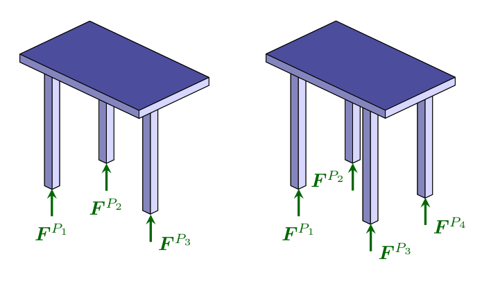
Figure 9. Determinate (left, $n=3$) and undetermined (right, $n>3$) system of reactions on a rigid table: equilibrium gives only three scalar equations for the reactions at the feet. Copied from Notes.pdf, Fig. 13.6, p. 107.
Erratum in the source
Eq. 13.8 is printed with the summation sign after the first cross product, as if one position vector multiplied the sum of all reactions. The moment of the reactions about $P_1$ is the sum of the moments of each reaction about $P_1$, each with its own position vector; the box below writes it that way. The count of three independent scalar equations given in the notes is unchanged.
Equilibrium of the table: three scalar equationsLaw: equilibrium of a rigid body, resultant force and moment about P1 equal to zeroSource: Notes.pdf, Eq. 13.7; Notes.pdf, Eq. 13.8; Notes.pdf, Eq. 12.24
Floor basis: $\mathbf i$, $\mathbf j$ horizontal, $\mathbf k$ upward. Leg reactions vertical, the weight downward; the positions are measured from $P_1$.
$$\begin{aligned}
\sum_{i=1}^{n}\mathbf N^{P_i} + \mathbf W &= \mathbf 0 \quad &\text{(resultant force, Eq. 13.7)} \\
\sum_{i=1}^{n}\overrightarrow{P_1P_i}\times\mathbf N^{P_i} + \overrightarrow{P_1G}\times\mathbf W &= \mathbf 0 \quad &\text{(resultant moment about P1, Eq. 13.8)} \\
\mathbf N^{P_i} &= N_i\,\mathbf k,\quad \mathbf W = -W\,\mathbf k \quad &\text{(vertical forces)} \\
\overrightarrow{P_1P_i} &= a_i\,\mathbf i + b_i\,\mathbf j,\quad \overrightarrow{P_1G} = a_G\,\mathbf i + b_G\,\mathbf j + h\,\mathbf k \quad &\text{(feet on the floor, G at height h)} \\
\left(a_i\,\mathbf i + b_i\,\mathbf j\right)\times N_i\,\mathbf k &= N_i\left(b_i\,\mathbf i - a_i\,\mathbf j\right) \quad &\text{(i cross k equals minus j; j cross k equals i)} \\
\overrightarrow{P_1G}\times\left(-W\mathbf k\right) &= -W\left(b_G\,\mathbf i - a_G\,\mathbf j\right) \quad &\text{(same products; k cross k is zero)} \\
\textstyle\sum_i N_i &= W \quad &\text{(k component of the force equation)} \\
\textstyle\sum_i N_i\,b_i &= W\,b_G,\quad \textstyle\sum_i N_i\,a_i = W\,a_G \quad &\text{(i and j components of the moment equation)}
\end{aligned}$$
$$\boxed{3\ \text{independent equations for } n\ \text{unknowns } N_i:\ \text{determinate if } n = 3,\ \text{hyperstatic if } n \gt 3}$$
Units: forces in $[\mathrm{M\,L\,T^{-2}}]$, moments in $[\mathrm{M\,L^2\,T^{-2}}]$.
Meaning: the other three scalar components are identically zero; with more than three legs the constraints are redundant and the problem is hyperstatic.
In general motion the reactions are underdetermined whenever the number of reaction unknowns exceeds the number of equations available for them. Finding them then requires abandoning the rigid model and using the elastic properties of the materials (elasticity and structural analysis courses). The system of reactions between two rigid bodies can, however, always be reduced to a resultant force and a resultant torque about a chosen point $A$, and these reduced loads can always be determined.
4. Systems of rigid bodies
The rigid body model reduces the kinematic variables of a free body to six and lets us ignore the internal forces between its particles, both thanks to the rigidity constraint. In a general problem there are several bodies and particles that constrain one another (joints, pins) and interact through reactions and applied forces and torques (Notes.pdf, Sec. 13.4).
Degrees of freedom and equations of a systemLaw: six degrees of freedom per free body, three per free particle; one fewer per scalar constraintSource: Notes.pdf, Sec. 13.4
$$\begin{aligned}
n_{\mathrm{dof}}^{\mathrm{free}} &= 6\,n_B + 3\,n_P \quad &\text{(free bodies and free particles)} \\
n_{\mathrm{dof}}^{\mathrm{free}} &= 6\cdot 2 + 3\cdot 1 = 15 \quad &\text{(two bodies and one particle, example of the notes)} \\
n_{\mathrm{dof}} &= n_{\mathrm{dof}}^{\mathrm{free}} - n_{\mathrm{constraints}} \quad &\text{(one fewer per scalar constraint)} \\
n_{\mathrm{dof}} &= 6 + 6 - 3 = 9 \quad &\text{(two bodies joined by a ball-and-socket joint, Fig. 13.7)} \\
n_{\mathrm{eq}} &= 6\,n_B + 3\,n_P = 12 \quad &\text{(force and moment equations of each part)} \\
n_{\mathrm{dof}} + n_{\mathrm{reactions}} &= 9 + 3 = 12 \quad &\text{(coordinates plus R1, R2, R3)}
\end{aligned}$$
Meaning: every scalar constraint removes a degree of freedom and adds a reaction unknown, so the equations of the parts always close the problem.
Each body gives six scalar equations and each particle three; they are coupled through the constraints and the interactions and in general must be solved together. All the bodies and particles, or several of them, can also be grouped into a single material system: its equations hold the inter-body forces and reactions as internal loads, which cancel. Those equations are linear combinations of the equations of the parts and give no new information, but they may replace some of them to ease the solution; the reactions between bodies, on the other hand, appear only in the equations of the parts. The general equations of motion, Notes.pdf, Eq. 12.4 and Notes.pdf, Eq. 12.5, apply to any material system we choose, and the words internal and external depend on that choice.
4.1 Two bodies joined by a ball-and-socket joint
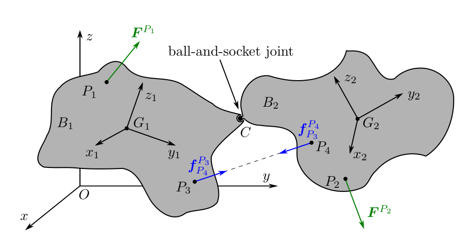
Figure 10. Two rigid bodies joined at $C$; $\mathbf F^{P_1}$, $\mathbf F^{P_2}$ are external and $\mathbf f_{P_4}^{P_3}$, $\mathbf f_{P_3}^{P_4}$ are the equal and opposite forces the bodies exert on each other. Copied from Notes.pdf, Fig. 13.7, p. 108.
Two rigid bodies $B_1$ and $B_2$ are joined by a ball-and-socket joint at the common body point $C$. External forces $\mathbf F^{P_1}$ and $\mathbf F^{P_2}$ act at $P_1$ and $P_2$; the bodies also exert on each other the forces $\mathbf f_{P_4}^{P_3}$ (on $P_3$ of $B_1$) and $\mathbf f_{P_3}^{P_4}$ (on $P_4$ of $B_2$), equal and opposite and on the same line of action.
An exploded view draws each body apart from the rest and replaces every connection by its reaction force and torque. Each component must be defined unambiguously, with the sense taken as positive; by the third law of Newton the reaction is equal and opposite on the two bodies.
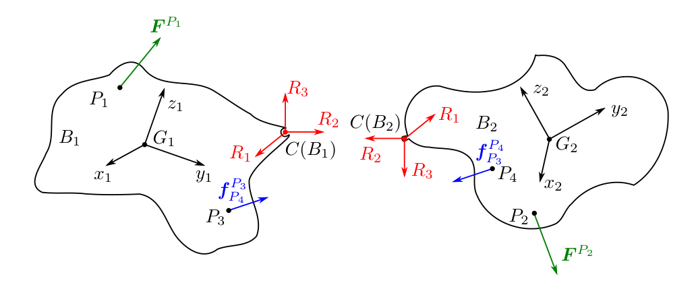
Figure 11. Exploded view. The reaction at $C$ is $\mathbf R=R_1\mathbf i+R_2\mathbf j+R_3\mathbf k$ on $B_1$ and $-\mathbf R$ on $B_2$ (third law of Newton). Copied from Notes.pdf, Fig. 13.8, p. 109.
Symbol
Meaning
SI unit
$m^{B_1}$, $m^{B_2}$, $m^S$
masses of the bodies and of the system
kg
$G_1$, $G_2$, $G$
centres of mass of the bodies and of the system
-
$\mathbf R$
reaction at $C$ on $B_1$, components $R_1$, $R_2$, $R_3$
N
$\mathbf H_{G_1,0}^{B_1}$
angular momentum of $B_1$ about $G_1$ relative to $S_0$
kg m$^2$/s
$\mathbf H_{G,0}^{S}$
angular momentum of the system about $G$
kg m$^2$/s
Equations of body B1Law: force equation and moment equation about the centre of massSource: Notes.pdf, Eq. 13.9; Notes.pdf, Eq. 12.8; Notes.pdf, Eq. 12.13
$$\begin{aligned}
m^{B_1}\,\mathbf a_0^{G_1} &= \mathbf F \quad &\text{(Eq. 12.8 for B1)} \\
\mathbf F &= \mathbf F^{P_1} + \mathbf R + \mathbf f_{P_4}^{P_3} \quad &\text{(external loads on B1 in the exploded view)} \\
\frac{d\mathbf H_{G_1,0}^{B_1}}{dt}\bigg|_0 &= \mathbf M_{G_1} - m^{B_1}\,\mathbf v_0^{G_1}\times\mathbf v_0^{G_1} \quad &\text{(Eq. 12.13 with A at G1)} \\
\mathbf v_0^{G_1}\times\mathbf v_0^{G_1} &= \mathbf 0 \quad &\text{(cross product of a vector with itself)} \\
\mathbf M_{G_1} &= \overrightarrow{G_1P_1}\times\mathbf F^{P_1} + \overrightarrow{G_1C}\times\mathbf R + \overrightarrow{G_1P_3}\times\mathbf f_{P_4}^{P_3} \quad &\text{(moment of each load about G1)}
\end{aligned}$$
Units: forces in $[\mathrm{M\,L\,T^{-2}}]$; moments and rates of angular momentum in $[\mathrm{M\,L^2\,T^{-2}}]$.
Meaning: six scalar equations for $B_1$, in which the three components of $\mathbf R$ appear as unknowns.
Equations of body B2Law: third law of Newton; force and moment equations about G2Source: Notes.pdf, Eq. 13.10; Notes.pdf, Eq. 12.8; Notes.pdf, Eq. 12.13
$$\begin{aligned}
\text{reaction at } C(B_2) &= -\mathbf R \quad &\text{(third law of Newton)} \\
\mathbf f_{P_3}^{P_4} &= -\mathbf f_{P_4}^{P_3} \quad &\text{(action and reaction between P3 and P4)} \\
m^{B_2}\,\mathbf a_0^{G_2} &= \mathbf F^{P_2} - \mathbf R - \mathbf f_{P_4}^{P_3} \quad &\text{(Eq. 12.8 for B2)} \\
\frac{d\mathbf H_{G_2,0}^{B_2}}{dt}\bigg|_0 &= \overrightarrow{G_2P_2}\times\mathbf F^{P_2} + \overrightarrow{G_2C}\times\left(-\mathbf R\right) + \overrightarrow{G_2P_4}\times\left(-\mathbf f_{P_4}^{P_3}\right) \quad &\text{(Eq. 12.13 with A at G2)}
\end{aligned}$$
Meaning: together with the equations of $B_1$, twelve scalar equations for nine coordinates and three reaction components.
Whole system: centre of mass and force equationLaw: definition of the centre of mass; sum of the force equations of the partsSource: Notes.pdf, Eq. 13.11; Notes.pdf, Eq. 13.12
$$\begin{aligned}
m^S\,\mathbf r_0^G &= m^{B_1}\,\mathbf r_0^{G_1} + m^{B_2}\,\mathbf r_0^{G_2},\quad m^S = m^{B_1} + m^{B_2} \quad &\text{(Eq. 13.11)} \\
m^S\,\mathbf a_0^G &= m^{B_1}\,\mathbf a_0^{G_1} + m^{B_2}\,\mathbf a_0^{G_2} \quad &\text{(second time derivative in S0; constant masses)} \\
&= \left(\mathbf F^{P_1} + \mathbf R + \mathbf f_{P_4}^{P_3}\right) + \left(\mathbf F^{P_2} - \mathbf R - \mathbf f_{P_4}^{P_3}\right) \quad &\text{(sum of the force equations of B1 and B2)} \\
&= \mathbf F^{P_1} + \mathbf F^{P_2} \quad &\text{(the internal loads cancel)}
\end{aligned}$$
Meaning: the force equation of the whole system is the sum of those of its parts, so it brings no new information and contains no reaction.
Whole system: moment equation as a linear combinationLaw: angular momentum about a moving point; moment equations of the partsSource: Notes.pdf, Eq. 13.12; Notes.pdf, Eq. 11.20
$$\begin{aligned}
\mathbf H_{G,0}^{S} &= \mathbf H_{G,0}^{B_1} + \mathbf H_{G,0}^{B_2} \quad &\text{(angular momenta of both bodies about G, not about G1 and G2)} \\
\mathbf H_{G,0}^{B_i} &= \mathbf H_{G_i,0}^{B_i} + m^{B_i}\,\overrightarrow{GG_i}\times\mathbf v_0^{G_i} \quad &\text{(change of point, Eq. 11.20)} \\
\frac{d}{dt}\left(\overrightarrow{GG_i}\times\mathbf v_0^{G_i}\right)\bigg|_0 &= \left(\mathbf v_0^{G_i} - \mathbf v_0^G\right)\times\mathbf v_0^{G_i} + \overrightarrow{GG_i}\times\mathbf a_0^{G_i} \quad &\text{(product rule; derivative of GGi)} \\
&= -\mathbf v_0^G\times\mathbf v_0^{G_i} + \overrightarrow{GG_i}\times\mathbf a_0^{G_i} \quad &\text{(vector times itself is zero)} \\
\frac{d\mathbf H_{G,0}^{S}}{dt}\bigg|_0 &= \sum_i \frac{d\mathbf H_{G_i,0}^{B_i}}{dt}\bigg|_0 - \mathbf v_0^G\times\sum_i m^{B_i}\mathbf v_0^{G_i} + \sum_i\overrightarrow{GG_i}\times m^{B_i}\mathbf a_0^{G_i} \quad &\text{(sum over the two bodies)} \\
\mathbf v_0^G\times\sum_i m^{B_i}\mathbf v_0^{G_i} &= \mathbf v_0^G\times m^S\mathbf v_0^G = \mathbf 0 \quad &\text{(first derivative of Eq. 13.11)} \\
\frac{d\mathbf H_{G_1,0}^{B_1}}{dt}\bigg|_0 + \overrightarrow{GG_1}\times m^{B_1}\mathbf a_0^{G_1} &= \overrightarrow{GP_1}\times\mathbf F^{P_1} + \overrightarrow{GC}\times\mathbf R + \overrightarrow{GP_3}\times\mathbf f_{P_4}^{P_3} \quad &\text{(Eq. 13.9 and GG1 plus G1X equal to GX)} \\
\frac{d\mathbf H_{G_2,0}^{B_2}}{dt}\bigg|_0 + \overrightarrow{GG_2}\times m^{B_2}\mathbf a_0^{G_2} &= \overrightarrow{GP_2}\times\mathbf F^{P_2} - \overrightarrow{GC}\times\mathbf R - \overrightarrow{GP_4}\times\mathbf f_{P_4}^{P_3} \quad &\text{(Eq. 13.10, same regrouping)} \\
\frac{d\mathbf H_{G,0}^{S}}{dt}\bigg|_0 &= \overrightarrow{GP_1}\times\mathbf F^{P_1} + \overrightarrow{GP_2}\times\mathbf F^{P_2} + \overrightarrow{P_4P_3}\times\mathbf f_{P_4}^{P_3} \quad &\text{(sum; GP3 minus GP4 equals P4P3)} \\
\overrightarrow{P_4P_3}\times\mathbf f_{P_4}^{P_3} &= \mathbf 0 \quad &\text{(the pair shares the line of action P3P4)}
\end{aligned}$$
Meaning: the moment equation of the system is a linear combination of Eqs. 13.9 and 13.10; the reaction at $C$ and the internal pair drop out, so they can only be computed from the equations of the parts.
5. The Newtonian mechanics approach for systems of particles and rigid bodies
The velocity and acceleration fields of a rigid body come from a strong constraint among its particles: their mutual distances are constant. With (i) this rigidity constraint and the identification of a body with a body-fixed frame, (ii) mass, linear and angular momentum, kinetic energy and inertia, (iii) the equivalence and reduction of systems of forces and couples, and (iv) the equations of motion of rigid bodies and of systems, any problem with particles and rigid bodies can be posed and solved. Chapter 14 of the notes completes the scheme of Chapter 7 (Notes.pdf, Ch. 14).
5.1 Preliminaries
Read and understand the whole problem first; then check that you know how to answer each question before writing. Draw the system in the most generic configuration, and add sketches of the rotations, of the initial configuration and exploded views of the parts. Then answer these questions:
How many rigid bodies and particles form the system, and how many degrees of freedom would it have without constraints?
Are there constraints? Translate each into a mathematical expression and visualise the motions it allows.
What is the effective number of degrees of freedom once the constraints are taken into account?
Select the independent coordinates. Their number equals the effective degrees of freedom plus the number of non-integrable constraints: those extra coordinates are redundant but cannot be eliminated, because the non-integrable constraints relate only their derivatives. Even with integrable constraints it may help to keep additional coordinates and state their dependency on the others later (for instance with rolling without slipping).
Define the reference frames and vector bases that help, in particular one body-fixed frame for each rigid body, and every new vector in terms of those already defined.
In item 4 the notes say "define additional constraints"; the context (a redundant coordinate later tied to the others, as with rolling without slip) shows that additional coordinates are meant.
Then plan the solution: are the equations of motion needed, in which frame, will conservation of mechanical energy be used, and so on.
Number of coordinates to keepLaw: independent coordinates plus redundant coordinates of non-integrable constraintsSource: Notes.pdf, Sec. 14.1
$$\begin{aligned}
n_{\mathrm{dof}} &= 6\,n_B + 3\,n_P - n_{\mathrm{constraints}} \quad &\text{(items 1 to 3)} \\
n_{q} &= n_{\mathrm{dof}} + n_{\mathrm{non\text{-}int}} \quad &\text{(item 4)} \\
n_{q} &= 1 + 0 = 1 \quad &\text{(planar rolling disk: Eq. 13.4 is integrable)} \\
n_{q} &= 3 + 2 = 5 \quad &\text{(wobbling disk of Sec. 2.3: two non-integrable no-slip conditions)}
\end{aligned}$$
Meaning: redundant coordinates are kept only when a constraint ties their derivatives and not the coordinates themselves.
5.2 Kinematics and inertia properties
Write the relevant position vectors and the linear and angular velocities and accelerations as functions of the chosen coordinates, their derivatives and time. The rotation of a body may be built as three successive simple rotations (Euler angles, if they are among the coordinates). For each body, the force equation needs the position, velocity and acceleration of the centre of mass and the total mass; the velocity and acceleration fields help when the velocity of some point is already known (rolling without slip). The moment equation needs the angular velocity, the angular acceleration and the tensor of inertia about a chosen point, usually the centre of mass or a fixed point of the body; it may be convenient to put the origin of the body-fixed frame there. The tensor of inertia is often built from those of the parts and Steiner's theorem.
5.3 Dynamics
Once the derivatives of any redundant coordinates have been eliminated, we need as many equations as effective degrees of freedom, plus one for each extra unknown (reaction components). Before writing them:
List the known applied forces and their points of application, each in terms of the chosen coordinates.
Identify the unknown reaction forces and torques introduced by the constraints; each component adds an unknown. Use the third law of Newton, distinguish internal and external loads of the material system analysed, and draw an exploded view.
In a non-inertial frame there would be inertia forces and moments; the course does not use this option for rigid bodies.
Compute the resultant force, and the resultant moment about the chosen point (centre of mass or a fixed point).
Reactions are the mechanism that enforces the kinematic constraints: a support that prevents a point from moving in a direction exerts a reaction force along that direction, and a constraint on the rotation about a line is imposed by a reaction torque about that line. They are not known in advance.
Closure of the system of equationsLaw: six scalar equations per rigid body, three per particleSource: Notes.pdf, Sec. 14.3
Meaning: the system is closed when equations and unknowns match; equations of the whole system or of a subset may replace some of them, but are not new independent equations.
Usually a linear combination of the equations free of reactions is easy to find: it gives the differential equations of the coordinates, solved with initial values of every coordinate and of its first derivative (analytically only in a few cases, such as linear equations; in general numerically). With the motion known, the remaining equations give the reactions. Some equations integrate directly into conservation laws (a component of linear or angular momentum, the mechanical energy); when energy is conserved it may replace one of the differential equations, since it is a dependent equation.
5.4 Solving the problem
The questions differ from problem to problem: integrating the equations of motion or reducing them to first integrals, or a qualitative analysis such as the regions where motion is possible for a given energy. Equilibrium configurations follow from setting all time derivatives to zero in the equations of motion (Notes.pdf, Sec. 12.3); their stability is studied by linearising the equations about them, or, with one effective degree of freedom and a conservative problem, by the second derivative of the potential. Linearisation is also asked directly to study small oscillations about a stable equilibrium.
6. Torque-free motion: kinematics
The rotation of a free rigid body with no torques, also called Poinsot's problem, shows some of the most surprising features of rigid body rotation and applies directly to spacecraft in orbit, asteroids and other celestial bodies; it is also the basis for bodies under torques that depend on their attitude, like an aircraft in the atmosphere. Many results follow from geometric thinking: the conservation laws act as geometric constraints in the space of angular velocities (Notes.pdf, Ch. 15).
The problem: describe the motion, relative to inertial space, of a rigid body $b$ with known centre of mass $G$ and tensor of inertia about $G$, when no forces or torques act on it.
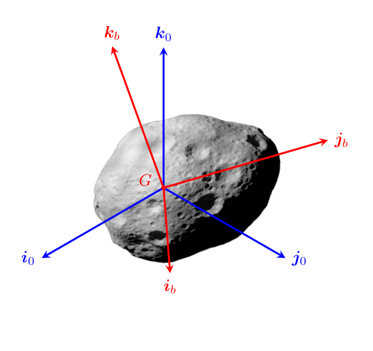
Figure 12. Torque-free motion: the inertial frame $S_0$ (blue, $\mathbf i_0,\mathbf j_0,\mathbf k_0$) and the body-fixed principal frame $S_b$ (red, $\mathbf i_b,\mathbf j_b,\mathbf k_b$) with origin at the centre of mass $G$. Copied from Notes.pdf, p. 113.
Meaning: in body axes the tensor is diagonal and constant in time.
6.1 Euler angles and the angular velocity
The attitude of $b$ is described by the standard 3-1-3 Euler angles, which take $B_0$ to $B_b$ through the intermediate frames $S_1$ and $S_2$ (Notes.pdf, Sec. 9.2). Each simple rotation is drawn in its own plane, looking down the rotation axis.
Figure 13. Precession $\psi$ about $\mathbf k_0=\mathbf k_1$ (out of the paper $\odot$): the shaded right triangles give $\mathbf i_1$ and $\mathbf j_1$ in $\mathcal B_0$..
Precession: rotation by psi about k0Law: simple rotation about the third axis; right-hand ruleSource: Notes.pdf, Eq. 9.16
View with $\mathbf k_0$ out of the paper (⊙), $\mathbf i_0$ to the right and $\mathbf j_0$ up. A positive $\psi$ turns counterclockwise. Right triangle for $\mathbf i_1$: hypotenuse the unit vector $\mathbf i_1$, adjacent leg along $\mathbf i_0$ (cosine), opposite leg along $\mathbf j_0$ (sine). Right triangle for $\mathbf j_1$: hypotenuse $\mathbf j_1$, adjacent leg along $\mathbf j_0$ (cosine), opposite leg along minus $\mathbf i_0$ (sine): turning $\mathbf j_0$ counterclockwise about the ⊙ axis carries its tip to the left, which is the origin of the minus sign.
$$\begin{aligned}
\mathbf i_1 &= \cos\psi\,\mathbf i_0 + \sin\psi\,\mathbf j_0 \quad &\text{(legs of the triangle of i1)} \\
\mathbf j_1 &= -\sin\psi\,\mathbf i_0 + \cos\psi\,\mathbf j_0 \quad &\text{(legs of the triangle of j1; tip moves towards minus i0)} \\
\mathbf k_1 &= \mathbf k_0 \quad &\text{(rotation axis unchanged)} \\
\det\,[{}_0R_1] &= \cos\psi\cos\psi - \left(-\sin\psi\right)\sin\psi = \cos^2\psi + \sin^2\psi = 1 \quad &\text{(expansion along the third row)} \\
\mathbf i_1\cdot\mathbf j_1 &= -\cos\psi\sin\psi + \sin\psi\cos\psi = 0 \quad &\text{(columns orthogonal, so the product of the matrix and its transpose is the identity)}
\end{aligned}$$
Meaning: the columns are the components of the new unit vectors in $B_0$; the matrix is a proper rotation.
Figure 14. Nutation $\theta$ about $\mathbf i_1=\mathbf i_2$ (out of the paper $\odot$): the shaded right triangles give $\mathbf j_2$ and $\mathbf k_2=\mathbf k_b$ in $\mathcal B_1$..
Nutation: rotation by theta about i1Law: simple rotation about the first axis; right-hand ruleSource: Notes.pdf, Eq. 9.17
View with $\mathbf i_1$ out of the paper (⊙), $\mathbf j_1$ to the right and $\mathbf k_1$ up (right-handed because the cross product of $\mathbf j_1$ and $\mathbf k_1$ is $\mathbf i_1$). Triangle of $\mathbf j_2$: hypotenuse $\mathbf j_2$, adjacent leg along $\mathbf j_1$ (cosine), opposite leg along $\mathbf k_1$ (sine). Triangle of $\mathbf k_2$: hypotenuse $\mathbf k_2$, adjacent leg along $\mathbf k_1$ (cosine), opposite leg along minus $\mathbf j_1$ (sine), since a counterclockwise turn about the ⊙ axis carries the tip of $\mathbf k_1$ to the left.
$$\begin{aligned}
\mathbf i_2 &= \mathbf i_1 \quad &\text{(rotation axis)} \\
\mathbf j_2 &= \cos\theta\,\mathbf j_1 + \sin\theta\,\mathbf k_1 \quad &\text{(legs of the triangle of j2)} \\
\mathbf k_2 &= -\sin\theta\,\mathbf j_1 + \cos\theta\,\mathbf k_1 \quad &\text{(legs of the triangle of k2)} \\
\det\,[{}_1R_2] &= 1\cdot\left(\cos^2\theta + \sin^2\theta\right) = 1 \quad &\text{(expansion along the first row)} \\
\mathbf j_2\cdot\mathbf k_2 &= -\cos\theta\sin\theta + \sin\theta\cos\theta = 0 \quad &\text{(orthogonal columns)} \\
\mathbf k_1 &= \sin\theta\,\mathbf j_2 + \cos\theta\,\mathbf k_2 \quad &\text{(third row of the matrix: inverse equals transpose)}
\end{aligned}$$
Meaning: $\theta$ is the angle between $\mathbf k_0$ and the body axis $\mathbf k_b$, which coincides with $\mathbf k_2$.
Figure 15. Spin $\varphi$ about $\mathbf k_2=\mathbf k_b$ (out of the paper $\odot$): the shaded right triangles give $\mathbf i_b$ and $\mathbf j_b$ in $\mathcal B_2$..
Spin: rotation by phi about k2Law: simple rotation about the third axis; right-hand ruleSource: Notes.pdf, Eq. 9.18
View with $\mathbf k_2$ out of the paper (⊙), $\mathbf i_2$ to the right and $\mathbf j_2$ up. The triangles are those of the precession with $\varphi$ in place of $\psi$.
$$\begin{aligned}
\mathbf i_b &= \cos\varphi\,\mathbf i_2 + \sin\varphi\,\mathbf j_2 \quad &\text{(adjacent leg along i2, opposite leg along j2)} \\
\mathbf j_b &= -\sin\varphi\,\mathbf i_2 + \cos\varphi\,\mathbf j_2 \quad &\text{(tip of j2 carried towards minus i2)} \\
\mathbf k_b &= \mathbf k_2 \quad &\text{(rotation axis)} \\
\det\,[{}_2R_b] &= \cos^2\varphi + \sin^2\varphi = 1 \quad &\text{(expansion along the third row)} \\
\mathbf i_2 &= \cos\varphi\,\mathbf i_b - \sin\varphi\,\mathbf j_b,\quad \mathbf j_2 = \sin\varphi\,\mathbf i_b + \cos\varphi\,\mathbf j_b \quad &\text{(rows of the matrix: inverse equals transpose)}
\end{aligned}$$
Meaning: the spin turns the body about its own axis $\mathbf k_b$.
Angular velocity in the bases B0 and B1Law: composition of angular velocities of the three simple rotationsSource: Notes.pdf, Eq. 9.21; Notes.pdf, Sec. 15.1
Meaning: the angular acceleration is obtained by differentiating the components in either basis.
7. Torque-free motion: dynamics
7.1 Conservation of linear and angular momentum
Momentum and angular momentum are constant in S0Law: force equation and moment equation about G with no loadsSource: Notes.pdf, Eq. 15.6; Notes.pdf, Eq. 15.7; Notes.pdf, Eq. 12.8; Notes.pdf, Eq. 12.13
$$\begin{aligned}
\frac{d\mathbf p_0}{dt}\bigg|_0 &= m\,\mathbf a_0^G = \mathbf F = \mathbf 0 \quad &\text{(Eq. 12.8 with no forces)} \\
\mathbf p_0(t) - \mathbf p_0(0) &= \int_0^t \mathbf 0\,dt' = \mathbf 0 \quad &\text{(Barrow's rule)} \\
\frac{d\mathbf H_{G0}}{dt}\bigg|_0 &= \mathbf M_G - m\,\mathbf v_0^G\times\mathbf v_0^G \quad &\text{(Eq. 12.13 with A at G)} \\
&= \mathbf 0 - \mathbf 0 \quad &\text{(no torque; vector times itself is zero)}
\end{aligned}$$
$$\boxed{\mathbf p_0 = \text{const in } S_0,\qquad \mathbf H_{G0} = \text{const in } S_0}$$
Units: $[\mathrm{M\,L\,T^{-1}}]$ and $[\mathrm{M\,L^2\,T^{-1}}]$.
Meaning: both vectors are fixed in inertial space but in general not in the non-inertial frame $S_b$, where their derivatives are not zero.
Since $G$ moves with constant velocity, a frame with origin $G$ and basis $B_0$ is inertial; the translation has nothing more to say, so from now on the origin $O$ of $S_0$ is placed at $G$. Because $\mathbf H_{G0}$ is constant, $\mathbf k_0$ can be chosen along it without loss of generality.
Components of the angular momentumLaw: angular momentum about G of a rigid body; principal basisSource: Notes.pdf, Eq. 15.8; Notes.pdf, Eq. 15.9; Notes.pdf, Eq. 11.21
$$\begin{aligned}
\mathbf H_{G0} &= H_Z\,\mathbf k_0 = H_x\,\mathbf i_b + H_y\,\mathbf j_b + H_z\,\mathbf k_b \quad &\text{(k0 chosen along the constant vector, Eq. 15.8)} \\
H_X &= H_Y = 0,\quad H_Z = H_{G0} \quad &\text{(consequence of the choice of k0)} \\
\mathbf H_{G0} &= \overline{\overline{I}}_G\cdot\boldsymbol\omega_{b0} \quad &\text{(Eq. 11.21 with A at G)}
\end{aligned}$$
Meaning: when the principal moments differ, the angular momentum is not parallel to the angular velocity; this is the source of the richness of torque-free motion.
7.2 Euler's equations with no torque
Derivative of the angular momentum in body axesLaw: Coriolis theorem with the tensor of inertia constant in SbSource: Notes.pdf, Eq. 15.10; Notes.pdf, Eq. 12.20; [Lecture 10, Slide 13]
Meaning: seen from the body, the angular momentum turns with angular velocity minus that of the body, so that it stays fixed in inertial space.
Euler's equations of the torque-free bodyLaw: projection of Eq. 15.10 on the principal basis; cross product written outSource: Notes.pdf, Eq. 15.11; Notes.pdf, Eq. 15.12; Notes.pdf, Eq. 15.13; [Lecture 10, Slide 14]
Units: $[\mathrm{M\,L^2\,T^{-2}}]$ on both sides of each equation.
Meaning: three coupled first-order equations for the body components of the angular velocity; they are Euler's equations of Notes.pdf, Eq. 12.23 with zero torque.
7.3 Back to the Euler angles
Kinematic equations of the Euler anglesLaw: body components of the angular velocitySource: Notes.pdf, Eq. 15.14; Notes.pdf, Eq. 15.15; Notes.pdf, Eq. 15.16
$$\begin{aligned}
\omega_x &= \boldsymbol\omega_{b0}\cdot\mathbf i_b = \dot\psi\sin\theta\sin\varphi + \dot\theta\cos\varphi \quad &\text{(ib terms of the body-axes form of Sec. 6.1)} \\
\omega_y &= \boldsymbol\omega_{b0}\cdot\mathbf j_b = \dot\psi\sin\theta\cos\varphi - \dot\theta\sin\varphi \quad &\text{(jb terms)} \\
\omega_z &= \boldsymbol\omega_{b0}\cdot\mathbf k_b = \dot\psi\cos\theta + \dot\varphi \quad &\text{(kb terms)}
\end{aligned}$$
Meaning: once Euler's equations are solved, these three first-order equations give the angles, with their initial conditions.
Euler angles directly from the constant angular momentumLaw: projection of Eq. 15.8 on the body basisSource: Notes.pdf, Eq. 15.17; Notes.pdf, Eq. 15.18; Notes.pdf, Eq. 15.19
$$\begin{aligned}
\mathbf k_0 &= \mathbf k_1 = \sin\theta\,\mathbf j_2 + \cos\theta\,\mathbf k_2 \quad &\text{(Eq. 9.16 and the transpose of Eq. 9.17)} \\
&= \sin\theta\sin\varphi\,\mathbf i_b + \sin\theta\cos\varphi\,\mathbf j_b + \cos\theta\,\mathbf k_b \quad &\text{(transpose of Eq. 9.18 for j2)} \\
H_x &= H_{G0}\,\mathbf k_0\cdot\mathbf i_b = H_{G0}\sin\theta\sin\varphi \quad &\text{(Eq. 15.8)} \\
H_y &= H_{G0}\sin\theta\cos\varphi,\quad H_z = H_{G0}\cos\theta \quad &\text{(same projection on jb and kb)} \\
I_x\,\omega_x &= H_x \quad &\text{(Eq. 15.9, then Eq. 15.14 for the body component)}
\end{aligned}$$
Meaning: three first-order equations for the angles that bypass Euler's equations.
Singularity of the Euler angles at theta equal to 0 or piLaw: determinant of the linear map from the angle rates to the body componentsSource: Notes.pdf, Sec. 15.2; Notes.pdf, Sec. 9.2
Meaning: at those attitudes the precession and spin rates appear only through their sum and two equations become dependent; the problem is the parametrisation, not the physics, and attitude descriptions such as quaternions avoid it.
Conservation of kinetic energyLaw: kinetic energy of the rigid body about G; Euler's equation of Eq. 15.10Source: Notes.pdf, Eq. 15.20; Notes.pdf, Eq. 11.31
$$\begin{aligned}
T_0 &= \tfrac12\,\boldsymbol\omega_{b0}\cdot\overline{\overline{I}}_G\cdot\boldsymbol\omega_{b0} \quad &\text{(Eq. 11.31 with G at rest in the inertial frame centred at G)} \\
\frac{dT_0}{dt} &= \tfrac12\,\boldsymbol\alpha_{b0}\cdot\overline{\overline{I}}_G\cdot\boldsymbol\omega_{b0} + \tfrac12\,\boldsymbol\omega_{b0}\cdot\overline{\overline{I}}_G\cdot\boldsymbol\alpha_{b0} \quad &\text{(product rule in Sb; scalar, so the frame does not matter)} \\
&= \boldsymbol\omega_{b0}\cdot\left(\overline{\overline{I}}_G\cdot\boldsymbol\alpha_{b0}\right) \quad &\text{(the tensor is symmetric)} \\
&= \boldsymbol\omega_{b0}\cdot\left(-\boldsymbol\omega_{b0}\times\mathbf H_{G0}\right) \quad &\text{(Eq. 15.10)} \\
&= 0 \quad &\text{(triple product with a repeated vector)}
\end{aligned}$$
Meaning: the body simply spins about an axis fixed both in inertial space and in the body. The body itself need not be a sphere to have this tensor.
8.2 Axisymmetric tensor of inertia
Two equal moments give an axisymmetric tensor: prolate (javelin-shaped) when the two equal moments are the larger ones, oblate (plate-shaped) when the two equal moments are the smaller ones.
Axisymmetric tensors and their invarianceLaw: dyadic form of a diagonal tensor; a rotation about the symmetry axis leaves it unchangedSource: Notes.pdf, Eq. 15.22; Notes.pdf, Eq. 10.35
Prolate case written with dyads; $\overline{\overline{U}}$ is the identity tensor.
$$\boxed{\text{prolate: } \overline{\overline{I}}_G = \begin{bmatrix} A & 0 & 0 \\ 0 & A & 0 \\ 0 & 0 & B \end{bmatrix}_b,\ A \gt B;\qquad \text{oblate: } \overline{\overline{I}}_G = \begin{bmatrix} A & 0 & 0 \\ 0 & B & 0 \\ 0 & 0 & B \end{bmatrix}_b,\ A \gt B}$$
Units: $[\mathrm{M\,L^2}]$.
Meaning: the components look the same in any basis obtained by a rotation about $\mathbf k_b$ (prolate) or about $\mathbf i_b$ (oblate, by the same argument with the roles of the axes exchanged).
Euler's equations of the prolate bodyLaw: Eqs. 15.11 to 15.13 with two equal momentsSource: Notes.pdf, Eq. 15.23; Notes.pdf, Eq. 15.24; Notes.pdf, Eq. 15.25
$$\begin{aligned}
I_x\dot\omega_x &= (I_y - I_z)\,\omega_y\omega_z = (A - B)\,\omega_y\omega_z \quad &\text{(Eq. 15.11 with Iy equal to A and Iz equal to B)} \\
I_y\dot\omega_y &= (I_z - I_x)\,\omega_z\omega_x = -(A - B)\,\omega_z\omega_x \quad &\text{(Eq. 15.12 with Iz equal to B and Ix equal to A)} \\
I_z\dot\omega_z &= (I_x - I_y)\,\omega_x\omega_y = (A - A)\,\omega_x\omega_y = 0 \quad &\text{(Eq. 15.13 with equal Ix and Iy)} \\
\omega_z(t) - \omega_z(0) &= \int_0^t 0\,dt' = 0 \quad &\text{(Barrow's rule)}
\end{aligned}$$
Meaning: the spin component about the symmetry axis is constant, fixed by the initial conditions; the two transverse components are coupled.
Erratum in the source
The notes define the rate of Eqs. 15.26 and 15.27 as the product of the difference of moments and the axial spin component, without dividing by $A$. That product has units of angular momentum, not of angular velocity, and does not satisfy Eqs. 15.23 and 15.24 with the factor $A$ on their left-hand sides. The correct rate carries the factor one over $A$; the boxes below use the corrected rate and verify it. The form of Eqs. 15.26 and 15.27 is unchanged.
Transverse components of the prolate bodyLaw: linear system with constant coefficients; verification by differentiationSource: Notes.pdf, Eq. 15.26; Notes.pdf, Eq. 15.27
$$\begin{aligned}
\dot\omega_x &= \frac{(A - B)\,\omega_z}{A}\,\omega_y = \lambda\,\omega_y \quad &\text{(Eq. 15.23 divided by Ix equal to A)} \\
\dot\omega_y &= -\frac{(A - B)\,\omega_z}{A}\,\omega_x = -\lambda\,\omega_x \quad &\text{(Eq. 15.24 divided by Iy equal to A)} \\
\lambda &= \frac{(A - B)\,\omega_z}{A} \quad &\text{(constant, since $\omega_z$ is constant; corrected definition)} \\
\omega_x &= c_1\cos\lambda t + c_2\sin\lambda t \quad &\text{(trial solution, Eq. 15.26)} \\
\dot\omega_x &= -\lambda c_1\sin\lambda t + \lambda c_2\cos\lambda t \quad &\text{(chain rule: derivative of cos of lambda t is minus lambda sin of lambda t)} \\
&= \lambda\left(-c_1\sin\lambda t + c_2\cos\lambda t\right) = \lambda\,\omega_y \quad &\text{(with Eq. 15.27 for $\omega_y$)} \\
\dot\omega_y &= -\lambda c_1\cos\lambda t - \lambda c_2\sin\lambda t = -\lambda\,\omega_x \quad &\text{(chain rule on Eq. 15.27)} \\
c_1 &= \omega_x(0),\quad c_2 = \omega_y(0) \quad &\text{(values at t equal to 0)}
\end{aligned}$$
$$\boxed{\omega_x = c_1\cos\lambda t + c_2\sin\lambda t,\quad \omega_y = -c_1\sin\lambda t + c_2\cos\lambda t,\quad \lambda = \frac{(A - B)\,\omega_z}{A}}$$
Units: $[\mathrm{M\,L^2}]\,[\mathrm{T^{-1}}]/[\mathrm{M\,L^2}] = [\mathrm{T^{-1}}]$ for the rate, as the argument of the cosine requires.
Meaning: the transverse part of the angular velocity has constant magnitude and turns uniformly in the body plane normal to the symmetry axis.
Constant magnitude and sense of the precession seen from the bodyLaw: polar form of the transverse componentsSource: Notes.pdf, Eq. 15.26; Notes.pdf, Eq. 15.27
$$\begin{aligned}
\omega_x^2 + \omega_y^2 &= c_1^2\left(\cos^2\lambda t + \sin^2\lambda t\right) + c_2^2\left(\sin^2\lambda t + \cos^2\lambda t\right) + 2c_1c_2\left(\cos\lambda t\sin\lambda t - \sin\lambda t\cos\lambda t\right) \quad &\text{(squares of Eqs. 15.26 and 15.27 added)} \\
&= c_1^2 + c_2^2 \quad &\text{(Pythagorean identity; the cross terms cancel)} \\
|\boldsymbol\omega_{b0}|^2 &= c_1^2 + c_2^2 + \omega_z^2 = \text{const} \quad &\text{($\omega_z$ constant)} \\
c_1 &= c\cos\beta,\quad c_2 = c\sin\beta \quad &\text{(polar form of the constants)} \\
\omega_x &= c\left(\cos\beta\cos\lambda t + \sin\beta\sin\lambda t\right) = c\cos\left(\beta - \lambda t\right) \quad &\text{(cosine of a difference)} \\
\omega_y &= c\left(\sin\beta\cos\lambda t - \cos\beta\sin\lambda t\right) = c\sin\left(\beta - \lambda t\right) \quad &\text{(sine of a difference)} \\
\gamma &= \beta - \lambda t,\qquad \dot\gamma = -\lambda \quad &\text{(polar angle of the transverse part, measured from ib towards jb)}
\end{aligned}$$
$$\boxed{|\boldsymbol\omega_{b0}| = \text{const},\qquad \text{transverse part turning in } S_b \text{ with angular velocity } -\lambda\,\mathbf k_b}$$
Units: $[\mathrm{T^{-1}}]$.
Meaning: an observer in $S_b$ sees the angular velocity describe a cone about $\mathbf k_b$ at the constant rate given by the corrected rate; with the sign convention of the angle from $\mathbf i_b$ towards $\mathbf j_b$ (positive about $\mathbf k_b$), the sense is opposite to the axial spin component when the body is prolate.
Erratum in the source
The notes state that, for an observer in $S_b$, the angular velocity of the prolate body precesses in the same direction as the axial spin component, and in the opposite direction for an oblate body. The box above, built only from Eqs. 15.26 and 15.27, gives a body-frame rotation about minus $\mathbf k_b$ times the rate, which for a prolate body (positive difference of moments) is opposite to the axial component. The same sense follows from the spin rate obtained below: the plane containing $\mathbf k_0$ and $\mathbf k_b$, which contains the angular velocity, turns relative to the body at minus the spin rate. What does have the same sign as the axial component, for a nutation below a right angle, is the precession of the body about the fixed angular momentum seen from inertial space, which is the statement proved further on.
The angular velocity lies in the plane of k0 and kbLaw: decomposition of the angular velocity and of the angular momentumSource: Notes.pdf, Eq. 15.9; Notes.pdf, Eq. 15.8
Meaning: the angular velocity is a precession about the fixed angular momentum plus a spin about the symmetry axis; $\mathbf k_0$, $\mathbf k_b$ and the angular velocity are coplanar.
Figure 16. Axisymmetric body, $\boldsymbol\omega_{b0}=(H_{G0}/A)\,\mathbf k_0+\lambda\,\mathbf k_b$: the angular velocity lies in the plane of $\mathbf k_0$ and $\mathbf k_b$ and describes a cone about $\mathbf k_0$ (space cone) and a cone about $\mathbf k_b$ (body cone) at the constant angles shown; prolate case, $\theta$ below a right angle..
Assume from now on that the nutation is neither 0 nor $\pi$.
No nutation, constant precession and spinLaw: linear combinations of Eqs. 15.17 to 15.19 with equal transverse momentsSource: Notes.pdf, Eq. 15.17; Notes.pdf, Eq. 15.18; Notes.pdf, Eq. 15.19; Notes.pdf, Sec. 15.3
$$\begin{aligned}
A\left(\dot\psi\sin\theta\sin\varphi\cos\varphi + \dot\theta\cos^2\varphi\right) &= H_{G0}\sin\theta\sin\varphi\cos\varphi \quad &\text{(Eq. 15.17 times cos phi)} \\
A\left(\dot\psi\sin\theta\cos\varphi\sin\varphi - \dot\theta\sin^2\varphi\right) &= H_{G0}\sin\theta\cos\varphi\sin\varphi \quad &\text{(Eq. 15.18 times sin phi)} \\
A\,\dot\theta\left(\cos^2\varphi + \sin^2\varphi\right) &= 0 \quad &\text{(first minus second)} \\
\dot\theta &= 0 \quad &\text{(Pythagorean identity; A not zero)} \\
A\,\dot\psi\sin\theta\left(\sin^2\varphi + \cos^2\varphi\right) &= H_{G0}\sin\theta\left(\sin^2\varphi + \cos^2\varphi\right) \quad &\text{(Eq. 15.17 times sin phi plus Eq. 15.18 times cos phi)} \\
\dot\psi &= \frac{H_{G0}}{A} \quad &\text{(division by A sin theta, not zero)} \\
\dot\varphi &= \frac{H_{G0}\cos\theta}{B} - \dot\psi\cos\theta = H_{G0}\cos\theta\,\frac{A - B}{AB} \quad &\text{(Eq. 15.19 divided by Iz equal to B)} \\
\omega_z &= \frac{H_{G0}\cos\theta}{B} \quad &\text{(Eq. 15.19 with Eq. 15.16)} \\
\dot\varphi &= \frac{(A - B)\,\omega_z}{A} = \lambda \quad &\text{(substitution)}
\end{aligned}$$
Units: $[\mathrm{M\,L^2\,T^{-1}}]/[\mathrm{M\,L^2}] = [\mathrm{T^{-1}}]$ for each rate.
Meaning: there is no nutation motion; precession and spin are constant, and the spin rate equals the corrected rate of the transverse components, which agrees with the coplanarity box.
Sign of precession and spin for the prolate bodyLaw: signs of the factors of the ratesSource: Notes.pdf, Sec. 15.3
$$\begin{aligned}
\dot\psi &= \frac{H_{G0}}{A} \gt 0 \quad &\text{(magnitude over a positive moment)} \\
\frac{A - B}{AB} &\gt 0 \quad &\text{(prolate: A greater than B)} \\
\cos\theta &\gt 0 \iff \theta \in \left]0, \tfrac{\pi}{2}\right[ \quad &\text{(nutation between 0 and pi)} \\
\dot\psi\,\dot\varphi &= \frac{H_{G0}^2\cos\theta\,(A - B)}{A^2 B} \gt 0 \quad &\text{(product of the two rates)}
\end{aligned}$$
$$\boxed{\theta \in \left]0, \tfrac{\pi}{2}\right[ \;\Rightarrow\; \dot\psi \text{ and } \dot\varphi \text{ have the same sign}}$$
Units: $[\mathrm{T^{-2}}]$ for the product of rates.
Meaning: the prolate body precesses about the angular momentum in the same sense as it spins about its own axis.
Extension: direct and retrograde precession
The names below are not used in the notes, and the oblate case is analysed there with the symmetry axis along $\mathbf i_b$ (to keep the ordering of the moments). Here the axes are relabelled so that the symmetry axis is $\mathbf k_b$ in both cases, with transverse moment $A$ and axial moment $B$; the derivation of the previous boxes never used the sign of the difference of moments, so the same rates hold.
Extension: direct precession (prolate) and retrograde precession (oblate)Law: sign of the spin rate for both orderings of the momentsSource: Notes.pdf, Eq. 15.19; Notes.pdf, Sec. 15.3
$$\begin{aligned}
\dot\psi\,\dot\varphi &= \frac{H_{G0}^2\cos\theta\,(A - B)}{A^2 B} \quad &\text{(product of the two rates, valid for any A and B)} \\
A \gt B &\;\Rightarrow\; \dot\psi\,\dot\varphi \gt 0 \quad &\text{(prolate, with theta below a right angle: direct precession)} \\
A \lt B &\;\Rightarrow\; \dot\psi\,\dot\varphi \lt 0 \quad &\text{(oblate about kb, with theta below a right angle: retrograde precession)}
\end{aligned}$$
$$\boxed{\text{prolate: direct precession};\qquad \text{oblate: retrograde precession}\quad \left(\theta \in \left]0, \tfrac{\pi}{2}\right[\right)}$$
Units: $[\mathrm{T^{-2}}]$.
Meaning: a javelin-like body spins in the same sense as it precesses; a plate-like body spins against its precession.
8.3 Asymmetric tensor of inertia
Asymmetric bodyLaw: three different principal momentsSource: Notes.pdf, Eq. 15.28
$$\begin{aligned}
I_x &= A \gt I_y = B \gt I_z = C \quad &\text{(general case)} \\
\left(I_y - I_z\right)\left(I_z - I_x\right)\left(I_x - I_y\right) &= (B - C)(C - A)(A - B) \ne 0 \quad &\text{(no coefficient of Eqs. 15.11 to 15.13 vanishes)}
\end{aligned}$$
$$\boxed{\overline{\overline{I}}_G = \begin{bmatrix} A & 0 & 0 \\ 0 & B & 0 \\ 0 & 0 & C \end{bmatrix}_b,\qquad A \gt B \gt C}$$
Units: $[\mathrm{M\,L^2}]$.
Meaning: any rotation of the basis changes the components; all three rotations are coupled. The analytic solution needs special functions, a numerical one is always possible, and for a qualitative picture Poinsot's construction is used.
9. Poinsot's construction
Instead of integrating the equations of motion, look at the analytic and geometric form of the conservation laws (Notes.pdf, Sec. 15.4).
9.1 Inertia ellipsoid and polhode
The inertia (energy) ellipsoidLaw: conservation of kinetic energy in body componentsSource: Notes.pdf, Eq. 15.29
$$\begin{aligned}
T_0 &= \tfrac12\,\boldsymbol\omega_{b0}\cdot\overline{\overline{I}}_G\cdot\boldsymbol\omega_{b0} \quad &\text{(Eq. 15.20)} \\
\overline{\overline{I}}_G\cdot\boldsymbol\omega_{b0} &= I_x\omega_x\,\mathbf i_b + I_y\omega_y\,\mathbf j_b + I_z\omega_z\,\mathbf k_b \quad &\text{(diagonal tensor in Bb)} \\
2T_0 &= I_x\omega_x^2 + I_y\omega_y^2 + I_z\omega_z^2 \quad &\text{(dot product with the angular velocity)} \\
1 &= \frac{\omega_x^2}{2T_0/I_x} + \frac{\omega_y^2}{2T_0/I_y} + \frac{\omega_z^2}{2T_0/I_z} \quad &\text{(division by 2 T0)} \\
a &= \sqrt{2T_0/I_x},\quad b = \sqrt{2T_0/I_y},\quad c = \sqrt{2T_0/I_z} \quad &\text{(standard form of an ellipsoid)}
\end{aligned}$$
$$\boxed{I_x\omega_x^2 + I_y\omega_y^2 + I_z\omega_z^2 = 2T_0,\qquad a = \sqrt{\tfrac{2T_0}{I_x}},\ b = \sqrt{\tfrac{2T_0}{I_y}},\ c = \sqrt{\tfrac{2T_0}{I_z}}}$$
Units: $[\mathrm{M\,L^2\,T^{-2}}]$ for the equation; $\sqrt{[\mathrm{M\,L^2\,T^{-2}}]/[\mathrm{M\,L^2}]} = [\mathrm{T^{-1}}]$ for the semiaxes.
Meaning: the tip of the angular velocity always lies on this ellipsoid, fixed to the body; its trace is the polhode. The shape depends only on the ratios of the moments, and the largest moment gives the shortest semiaxis.
9.2 Invariable plane and herpolhode
The invariable planeLaw: kinetic energy as half the dot product of angular velocity and angular momentumSource: Notes.pdf, Eq. 15.30; Notes.pdf, Eq. 15.31
Meaning: in the space of the inertial components the tip of the angular velocity stays on a horizontal plane fixed in inertial space, the invariable (invariant) plane; its trace there is the herpolhode.
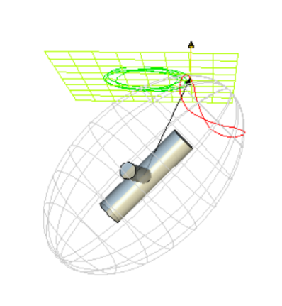
Figure 17. Poinsot's construction: the energy ellipsoid rolls without slipping on the invariable plane; the contact point is the tip of $\boldsymbol\omega_{b0}$, the normal of the plane is $\mathbf H_{G0}$, the trace on the ellipsoid is the polhode and the trace on the plane the herpolhode. Copied from Notes.pdf, p. 117.
The ellipsoid is tangent to the invariable planeLaw: gradient of an implicit surface is normal to itSource: Notes.pdf, Eq. 15.32
$$\begin{aligned}
f(\omega_x,\omega_y,\omega_z) &= \tfrac12\left(I_x\omega_x^2 + I_y\omega_y^2 + I_z\omega_z^2\right) - T_0 = 0 \quad &\text{(Eq. 15.29 in implicit form, halved)} \\
\frac{\partial f}{\partial\omega_x} &= \tfrac12\cdot 2\,I_x\omega_x = I_x\omega_x \quad &\text{(power rule; same for y and z)} \\
\mathbf n &= \frac{\partial f}{\partial\omega_x}\mathbf i_b + \frac{\partial f}{\partial\omega_y}\mathbf j_b + \frac{\partial f}{\partial\omega_z}\mathbf k_b = I_x\omega_x\,\mathbf i_b + I_y\omega_y\,\mathbf j_b + I_z\omega_z\,\mathbf k_b \quad &\text{(gradient)} \\
\mathbf n &= \mathbf H_{G0} = H_{G0}\,\mathbf k_0 \quad &\text{(Eq. 15.9 and Eq. 15.8)}
\end{aligned}$$
Meaning: at the tip of the angular velocity the ellipsoid and the plane share the normal, so they are tangent there. Since the contact point lies on the instantaneous axis, it has zero velocity: the motion of the body is the rolling without slip of its inertia ellipsoid on the invariable plane.
Erratum in the source
Eq. 15.32 differentiates the ellipsoid written as in Eq. 15.29; with that implicit function the gradient is twice the angular momentum. The box above uses half the energy equation as the implicit function, which gives exactly the printed result. The direction of the normal, which is all the argument needs, is the same.
9.3 Polhodes as intersections of two ellipsoids
The angular momentum ellipsoidLaw: constant magnitude of the angular momentum in body componentsSource: Notes.pdf, Eq. 15.33
$$\begin{aligned}
H_{G0}^2 &= \mathbf H_{G0}\cdot\mathbf H_{G0} \quad &\text{(squared magnitude, constant by Eq. 15.7)} \\
&= \left(I_x\omega_x\right)^2 + \left(I_y\omega_y\right)^2 + \left(I_z\omega_z\right)^2 \quad &\text{(Eq. 15.9 in the orthonormal basis Bb)}
\end{aligned}$$
Meaning: a second body-fixed ellipsoid; the tip of the angular velocity lives on the intersection of the two, which is the polhode, a closed curve.
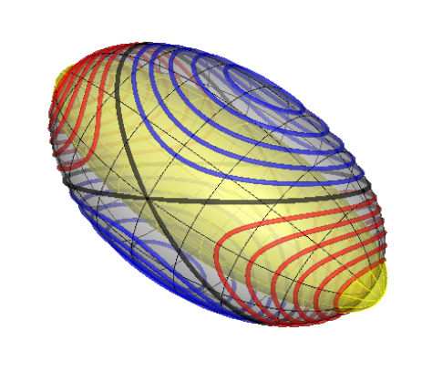
Figure 18. Polhodes on the inertia ellipsoid (intersection with the angular momentum ellipsoids): closed curves about the major axis $\mathbf i_b$ and the minor axis $\mathbf k_b$, and the separatrices through the intermediate axis $\mathbf j_b$, where the rotation is unstable. Copied from Notes.pdf, p. 118.
Shape of the polhodes near each principal axisLaw: elimination of one component between Eqs. 15.29 and 15.33Source: Notes.pdf, Eq. 15.29; Notes.pdf, Eq. 15.33; Notes.pdf, Sec. 15.4
Asymmetric body with moments $A$, $B$, $C$ in decreasing order.
$$\begin{aligned}
A\,(2T_0) - H_{G0}^2 &= A\left(A\omega_x^2 + B\omega_y^2 + C\omega_z^2\right) - \left(A^2\omega_x^2 + B^2\omega_y^2 + C^2\omega_z^2\right) \quad &\text{(Eq. 15.29 times A minus Eq. 15.33)} \\
&= B(A - B)\,\omega_y^2 + C(A - C)\,\omega_z^2 \quad &\text{(the x terms cancel)} \\
H_{G0}^2 - C\,(2T_0) &= A(A - C)\,\omega_x^2 + B(B - C)\,\omega_y^2 \quad &\text{(Eq. 15.33 minus Eq. 15.29 times C)} \\
H_{G0}^2 - B\,(2T_0) &= A(A - B)\,\omega_x^2 - C(B - C)\,\omega_z^2 \quad &\text{(Eq. 15.33 minus Eq. 15.29 times B)}
\end{aligned}$$
Units: $[\mathrm{M^2\,L^4\,T^{-2}}]$ in every term.
Meaning: projected on the plane normal to the major or minor axis, the polhodes are ellipses around that axis: the body spins with a small nutation and precesses about the principal direction. Projected on the plane normal to the intermediate axis they are hyperbolas: the rotation axis moves far away from that axis, to the antipodal point and back periodically (the Dzhanibekov effect).
Rotation about the major or minor axis is therefore marginally stable (small deviations stay small on the inertia ellipsoid) and rotation about the intermediate axis is unstable.
Extension: linearised Euler equations about each principal axis
The notes reach the stability statement geometrically. The linearisation below, which follows the general method of Notes.pdf, Sec. 14.4, gives the same classification from Euler's equations.
Extension: small perturbations of a rotation about a principal axisLaw: linearisation of Eqs. 15.11 to 15.13 about a steady rotationSource: Notes.pdf, Eq. 15.11; Notes.pdf, Eq. 15.12; Notes.pdf, Eq. 15.13; Notes.pdf, Sec. 14.4
Steady rotation at rate $\Omega$ about one principal axis; the other two components are small and their products are neglected.
$$\begin{aligned}
\text{major axis: } B\dot\omega_y &= (C - A)\,\Omega\,\omega_z,\quad C\dot\omega_z = (A - B)\,\Omega\,\omega_y \quad &\text{(Eqs. 15.12 and 15.13 with $\omega_x$ equal to $\Omega$)} \\
\ddot\omega_y &= \frac{(C - A)\,\Omega}{B}\,\dot\omega_z = -\frac{(A - C)(A - B)}{BC}\,\Omega^2\,\omega_y \quad &\text{(time derivative and substitution)} \\
\text{intermediate axis: } A\dot\omega_x &= (B - C)\,\Omega\,\omega_z,\quad C\dot\omega_z = (A - B)\,\Omega\,\omega_x \quad &\text{(Eqs. 15.11 and 15.13 with $\omega_y$ equal to $\Omega$)} \\
\ddot\omega_x &= \frac{(B - C)\,\Omega}{A}\,\dot\omega_z = +\frac{(B - C)(A - B)}{AC}\,\Omega^2\,\omega_x \quad &\text{(time derivative and substitution)} \\
\text{minor axis: } A\dot\omega_x &= (B - C)\,\Omega\,\omega_y,\quad B\dot\omega_y = (C - A)\,\Omega\,\omega_x \quad &\text{(Eqs. 15.11 and 15.12 with $\omega_z$ equal to $\Omega$)} \\
\ddot\omega_x &= \frac{(B - C)\,\Omega}{A}\,\dot\omega_y = -\frac{(B - C)(A - C)}{AB}\,\Omega^2\,\omega_x \quad &\text{(time derivative and substitution)}
\end{aligned}$$
$$\boxed{\text{major and minor axes: harmonic oscillation};\qquad \text{intermediate axis: exponential growth}}$$
Units: $[\mathrm{T^{-2}}]$ for each coefficient, ratios of moments times the square of a rate.
Meaning: with all three differences positive, the coefficient has the sign of a restoring term about the major and minor axes and of a repelling term about the intermediate axis.
9.4 Effect of internal dissipation
If the body is not perfectly rigid and dissipates part of its kinetic energy into heat, the inertia ellipsoid slowly changes size. Internal forces do not change the angular momentum, so the ellipsoid of Eq. 15.33 stays fixed, and the closed polhode becomes a spiral on the shrinking inertia ellipsoid. Near the minor axis the spiral moves away from it, which becomes unstable; near the major axis it approaches it, which becomes asymptotically stable; the intermediate axis, a saddle, stays unstable.
Minimum kinetic energy at fixed angular momentumLaw: comparison of Eqs. 15.29 and 15.33 for an asymmetric bodySource: Notes.pdf, Eq. 15.29; Notes.pdf, Eq. 15.33; Notes.pdf, Sec. 15.4
$$\begin{aligned}
A\,(2T_0) - H_{G0}^2 &= B(A - B)\,\omega_y^2 + C(A - C)\,\omega_z^2 \quad &\text{(first row of the polhode box)} \\
&\ge 0 \quad &\text{(both coefficients positive, squares non-negative)} \\
T_0 &\ge \frac{H_{G0}^2}{2A} \quad &\text{(division by 2A)} \\
T_0 &= \frac{H_{G0}^2}{2A} \iff \omega_y = \omega_z = 0 \quad &\text{(equality only for rotation about the major axis)}
\end{aligned}$$
$$\boxed{T_0 \ge \frac{H_{G0}^2}{2A},\qquad \text{minimum for rotation about the major axis}}$$
Meaning: a real body with some dissipation, rotating about any axis other than exactly the minor or intermediate one, ends up spinning about its major axis; the kinetic energy does not go to zero but to this minimum.
10. Practical formulary
Result
Formula
Source
Planar motion
$\boldsymbol\omega_{B0}\parallel\mathbf k$, three degrees of freedom